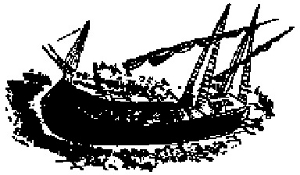

"Utopia adası, ortalarına düşen en geniş yerinde iki yüz mildir. Bu genişlik adanın iki yanına doğru bir hayli sürüp gider, sonra uçlara doğru azalmaya başlar. Öyle ki, ada beş yüz millik bir yarım-çember olur ve iki ucunun arası aşağı yukarı on bir mil çeken bir hilal biçimini alır. Hilalin ortası geniş bir körfezdir. Toprak hilalin sırtına doğru yükselir ve rüzgârları keser. Onun için de körfez dalgasızdır ve az çok durgun bir gölü andırır. Bu körfez her yerine gemilerin yanaşabileceği bir tek geniş liman gibidir. Körfezin girişi tehlikelidir. Çünkü bir yanda sığ kumluklar, öbür yanda da nerdeyse suyun yüzüne çıkan sarp kayalar vardır.
Tam ortada, çok uzaklardan gözüken ve gözüktüğü için de tehlikeli olmayan bir kayalık vardır. Utopialılar bu kayalığın başına bir kale yapmışlar ve içine bir alay asker yerleştirmişlerdir. Öbür kayalar su altında olduklarından gemiler için birer tuzaktır. Bu kayalar arasındaki yolları yalnız Utopialılar bilir. Bir Utopialı kılavuz olmadan hiçbir yabancı gemi buradan içeriye giremez. Kaldı ki, kıyılarda fenerler olmasa kendileri bile zor girerler. Bu fenerlerin yerini değiştirecek olsalar, en kalabalık düşman filosu yolunu şaşırıp kayalara çarparak batabilir. Adanın öbür yanında birçok liman var. Ama orada gerek doğa, gerek insan eli öylesine savunma olanakları yaratmıştır ki, bir avuç asker bütün bir ordunun karaya çıkmasına engel olabilir. Söylenenlere inanılacak olursa, burası eskiden bir ada değilmiş. Adanın durumu da bunu düşündürüyor. Eskiden buraya Abraxa denirmiş, ama Kral Utopus orayı fethedince Utopia olmuş. Bu akıllı kral ele geçirdiği ülkenin kaba ve vahşi halkını uslu, uygar, kibar insanlar haline getirdi. O kadar ki, Utopialılar bugün dünyanın en üstün ulusu oldu. Utopus burasını elde eder etmez, adayı karaya birleştiren 15 millik berzahı yardırdı ve böylece Abraxa toprakları Utopia oldu. Bu dev işin başarılmasında Utopus kendi ordusunun askerleriyle ada halkını bir arada çalıştırdı. Çünkü yerlilerin bunu zorla kölelere yaptırılan bir angarya diye görmelerini istemiyordu. Bunca insan gücü bir araya gelince, bir çırpıda başarı kazanıldı. Bu işi saçma görüp alaya alan komşu devletler, sonradan şaşakaldılar ve korkmaya başladılar.
Utopia adasının 54 büyük ve güzel şehri vardır. Hepsinde aynı dil konuşulur. Aynı töreler, aynı kurumlar, aynı yasalar yürürlüktedir. 54 şehrin hepsi aynı plan gereğince kurulmuştur ve hepsinde bölge özelliklerine göre biçimlenen aynı devlet yapısı vardır. Şehirlerin arası en az 24 mildir ve yürüyerek bir günde birinden öbürüne gidilir. Her yıl, her şehirden üç yaşlı başlı, bilge kişi gelip Amaurote'de toplanır ve memleket işlerine bakar. Amaurote adanın başkentidir. Çünkü orta yerdedir ve herkesin kolayca toplanmasına elverişlidir. Her şehrin tarım için en az 20 millik bir toprağı vardır. Genel olarak, toprak genişliği şehrin uzaklığıyla orantılıdır.
Hiçbir şehir yasanın çizdiği sınırları artırma hevesine düşmez. Halk kendini toprağın sahibi değil, çiftçisi, işçisi diye görür. Tarlaların ortasında her türlü tarım aracıyla donatılmış çiftlik evleri vardır. Bu evlerde her mevsimde, şehrin nöbet sırasıyla yolladığı işçi orduları oturur. Her çiftçi birliğinde kadın erkek en az 40 kişi ve iki köle vardır. Her topluluğun başında birer aile babası ve anası olarak, aklı başında, ölçülü bir kadınla bir erkek bulunur. Her 30 çiftçi ya da aile birliği bir philarch tarafından yönetilir. Her yıl, her birlikten 20 çiftçi şehre döner. Bunlar iki yıllık tarım nöbetini bitirmiş olanlardır. Bunların yerine 20 kişi tarım ödevi yapmaya gelir. Yeni gelenler, çiftlikte bir yıl çalışmış olanlardan ders görür, toprağı işlemesini öğrenir ve ertesi yıl kendileri de başkalarını yetiştirir. Böylece çiftçinin toptan acemi olması önlenir ve halkın yiyeceği bilgisizlik, görgüsüzlük yüzünden tehlikeye düşmez.
Bu her yılki yenileşmenin ve nöbet değiştirmenin bir amacı da yurttaşların hayatını çetin el kol işlerinde uzun süre yıpratmamaktır. Bununla beraber, tarım işlerinden hoşlanan bazıları köyde daha uzun süre kalma izni alabilirler. Çiftçiler toprağı işler, hayvan besler, odun keser ve bunları karadan, denizden şehre taşır. Tavukları çoğaltmakta çok akıllıca bir buluşları vardır. Yumurtaları kuluçka altına koymazlar, gerekli sıcaklığı kendileri sağlayıp civciv çıkartırlar ve civcivler kabuğunu delince tavuklar değil, insanları ana bilip onların ardından giderler. Pek az at beslerler, ama besledikleri atlar yaman olur. Gençler onları binicilik, savaş talimleri ve yarışlarda kullanırlar. Tarım ve ulaştırma işlerine yalnız öküzler koşulur. Utopialılar derler ki, öküz atla boy ölçüşemez, ama ondan daha sabırlı, daha dayanıklıdır. Öküz daha az hastalanır, daha ucuza mal olur, üstelik işe yaramaz olunca eti yenir.
Ekip biçtikleri ile bol bol ekmek yaparlar. Üzümün, elmanın ve armudun suyundan şarap yapıp içerler. Sadece su ya da bal ve meyanköküyle kaynatılmış su içtikleri de olur. Her şehrin ve köylerinin yiyeceği içeceği en ince hesaplarla belirlenmiştir. Bununla beraber, çiftçiler harcadıklarından çok daha fazlasını yetiştirmeye çalışırlar. Artan yiyecek içecekler komşu memleketlere yollanır. Köyde bulunmayan eşyayı, kap kacağı çiftçiler şehirden sağlarlar. Bunlar için şehir yöneticilerine başvurur ve dilediklerini karşılıksız ve beklemeksizin alırlar. Bu işleri her ay, şehre tatile geldikleri zaman yaparlar. Hasat zamanı gelince, aile birliklerinin başları philarchlar şehir yöneticilerine haber salar, ne kadar işçiye ihtiyaçları olduğunu bildirirler. Bunun üzerine hasatçılar belli bir zamanda sürü sürü gelir ve hava güzelse, bir günde ürünleri kaldırıverirler.
Utopia Şehirleri ve Başkent Amaurote Üstüne
Bir Utopia şehrini bilen, hepsini bilir. Çünkü bölge özellikleri dışında, bütün şehirler birbirine benzer. Onun için size herhangi bir şehri anlatabilirdim, ama Amaurote şehrini seçiyorum. Çünkü orası Millet Meclisi'nin ve hükümetin bulunduğu yerdir. Bundan ötürü de bütün öteki şehirlerden daha ünlü ve önemlidir. Ayrıca orada tam beş yıl yaşadığım için, en çok orasını severim. Amaurote alçak bir tepenin tatlı yamacında ve dört köşemsi bir biçimde kurulmuştur. Şehir tam tepenin biraz altından başlar ve Anydra ırmağının kıyılarına kadar iki mil uzar, nehre yaklaştıkça da genişler. Anydra ırmağı Amaurote'un 24 mil yukarılarında ufacık bir kaynaktan doğar. Bu cılız su aktıkça ve başka ırmaklarla birleştikçe büyür ve şehrin karşısında genişliği yarım mili bulur. Ondan sonra da genişledikçe genişler ve 60 mil ötelerde okyanusa dökülür. Denizle şehir arasında, şehrin altı mil kadar yukarısında ırmak suları, günde altı saat yükselip alçalır. Yükselme zamanı, denizin suları Anydra'nın yatağına otuz mil kadar girer ve nehri kaynağına doğru iter, o zaman Anydra'nın suları tuzlanır. Ama alçalma başlayınca sular temizlenir, şehre tatlı su gelir ve denize kadar bozulmadan akar.
Anydra'nın iki kıyısı bir taş köprüyle birleşir. Muhteşem kemerler üstünden geçen bu köprü, şehrin denize uzak olan yukarı ucunda kurulmuştur. Gemiler bu köprünün altından kolayca geçebilirler. Şehirde bundan daha küçük bir ırmak da vardır. Tatlı tatlı akan bu nehir, şehrin kurulduğu tepeden çıkar ve şehri ortasından geçip Anydra ile birleşir. Amaurotelular bu ırmağın kaynağını büyük taşlarla çevirip şehrin sınırları içine almışlardır. Düşman kuşatacak olursa, suyu kesmesin ya da zehirlemesin diye. Kaynağın en yüksek yerinden künklerle alınan su, dört bir yana dağıtılıp şehrin en kuytu köşelerine kadar ulaştırılır. Künklerin gidemediği yerlerde yağmur sularını toplayan ve şehir halkının ihtiyaçlarını karşılayan büyük sarnıçlar vardır.
Şehir çepeçevre yüksek ve kalın duvarlarla çevrilidir. Yer yer de kuleler ve kalelerle donatılmıştır. Surların üç yanında derin, geniş, ama çitler, dikenli çalılarla dolu susuz hendekler vardır. Dördüncü yanındaki hendekse ırmağın kendisidir. Sokaklar ve meydanlar, hem ulaştırmayı kolaylaştıracak, hem de rüzgârdan korunacak biçimde düzenlenmiştir. Evlerin rahatlığına diyecek yoktur, hepsi temiz ve güzeldir. Sokaklar boyunca, karşılıklı ve yan yana uzanırlar. Evlerin arkasında geniş bahçeler vardır. Her evin bir kapısı sokağa, bir kapısı bahçeye açılır. Her iki kapı da bir dokunuşta açılacak kadar hafiftir. Kilitler, anahtarlar yoktur. İsteyen girebilir. Çünkü evde hiçbir şey özel değildir, ne varsa herkesin malıdır. Utopialılar ev bark konusunda ortaklık ilkesine bağlıdırlar. Özel mülk düşüncesini kökünden yok etmek için her on yılda bir ev değiştirirler ve herkesin oturacağı ev kura ile belli olur.
Şehirliler bahçelerine büyük bir önem verirler. Üzümler, meyveler, çiçekler ve türlü bitkiler yetiştirirler. Bu işi o kadar bilgi ve zevkle yaparlar ki, ben şimdiye kadar hiçbir yerde bu bahçelerden daha bereketlisine, daha verimlisine ve göze daha güzel görünenine rastlamadım. Bahçeye düşkünlükleri sadece kendi zevkleri için değildir. Şehrin mahalleleri arasında en bakımlı bahçeyi kimler yapacak diye bir yarışma vardır. Doğrusu yurttaşlar için bundan daha hoş, daha yararlı bir uğraş düşünülemez. Utopia'yı kuran bunu çok iyi anlamış olacak ki, herkesin aklını bahçelere çelmek için ne gerekiyorsa yapmış. Utopialılar şehrin genel planını Utopus'un yaptığını söylerler. Ama bu devlet kurucusu tasarladığı bütün yapıları ve güzel yerleştirmeleri bitirememiş ve bir insan ömrünü aşan bu işleri kendinden sonraki kuşaklara bırakmış.
Adanın fethinden beri, özenle saklanan ve 1760 yıllık bir tarihi kucaklayan tutanaklardan öğrendiğimize göre, başlangıçta evler çerden çöpten, alçacık birer kulübeymiş; duvarları kerpiç, saçaklı damları sazlarla örülüymüş. Şimdiyse evler üç katlı taş ya da tuğla duvarlı, derli toplu ve içten sıvalıdır. Tavanlar düzdür, ucuz, yanmaz ve yağmura karşı kurşundan daha dayanıklı bir maddeyle kaplıdır. Rüzgâra karşı camlı pencereler vardır. Çünkü Utopia'da cam çok kullanılır. Bazı yerlerde cam yerine amber ya da yağla saydamlaştırılmış ince bezler kullanıldığı olur. Böylece ev hem rüzgârdan korunmuş, hem de daha fazla ışıklanmış olur.
Yönetim Görevlileri
Otuz aile her yıl, eski dilde syphogrant, yeni dilde philarch denilen bir baş seçerler. On syphogrant, 300 aile ile birlikte, eski dilde tranibore, yeni dilde baş philarch denilen birisinin buyruğu altındadırlar. 200 syphogrant, en dürüst, en uygun kimseyi seçeceklerine ant içtikten sonra, halkın gösterdiği dört adaydan birini, gizli oyla başkan seçerler. Şehir dörde bölünmüş olduğu için, her bölümün bir adayı kurultaya sunulmuştur. Başkan zorbalığa kaçmadığı sürece, ömrü boyunca yerinde kalır. Traniboreler ise, her yıl seçilirler, ağır bir neden olmadıkça da değiştirilmezler. Bütün öbür görevler de bir yıllıktır. Traniboreler her üç günde bir, gerekirse daha sık, başkanla birlikte toplanır, memleket işlerini görüşürler. Yurttaşlar arasında binde bir çıkan anlaşmazlıklara çarçabuk çare bulurlar. Kurultayın her toplantısında iki syphogrant hazır bulunur ve bu iki halk temsilcisi her toplantıda değişir. Kamuyu ilgilendiren işler, kurultayda üç gün tartışıldıktan sonra karara bağlanır. Kurultay ve büyük halk toplantıları dışında, bir araya gelip memleket işlerini konuşmak ölümle cezalandırılan bir suçtur. Bu da başkanla traniborelerin kolayca bir araya gelip, halkı zorbaca yasalarla ezmeye ve rejimi değiştirmeye kalkışmalarını önlemek için olsa gerektir.
Önemli sorunlar önce syphograntın seçim bölgelerine sunulur. Syphograntlar durumu ailelerine anlatırlar. O zaman sorun halk kurultayı önüne getirilir; ondan sonra da syphograntlar aralarında görüşüp kendi düşüncelerini ve halkın isteğini yüksek kurultaya sunarlar. Bazı sorunlar da bütün ada halkının önüne getirilir. Yüksek kurultayın uyduğu şu kural da anılmaya değer: Bir öneri geldiği zaman, hemen o gün üstünde tartışılmaz. Tartışma gelecek toplantıya bırakılır. Böylelikle kimse ilk aklına gelen şeyleri gelişigüzel ortaya atmaz ve halkın yararını unutarak kendi düşüncesini savunmaya kalkışmaz. İnsan çok kez öne sürdüğü bir düşünceden vazgeçmeyi kendine yediremez. Yanıldığını açığa vuramaz. Kendi ününü kurtarmak için halkın yararını feda eder. Ayaküstü düşünmenin yarattığı bu büyük tehlike böylece önlenmiş ve kurultay üyelerine düşünmek için bol bol vakit bırakılmıştır.
Bilimler, Sanatlar, Uğraşlar
Kadın erkek bütün Utopialılar usta birer tarımcı olmak zorundadırlar. Çocuklar erkeklerden tarımı okulda öğrenir ve şehre yakın köylere, tarlalara geziye götürülüp öğrendiklerini yerinde görürler. Orada çalışanları seyreder, kendileri de çalışmalara katılırlar. Bu tarım çalışmaları onların beden güçlerini de geliştirir. Bütün Utopialıların katılmak zorunda olduğu tarım dışında, herkes özel bir iş eğitimi görür. Kimi dokumacılık öğrenir, kimi duvarcılık, testicilik, kimi demircilik ya da dülgerlik. Başlıca zanaatlar bunlardır. Bütün adalılar birörnek giyinirler. Yalnız kadınla erkeğin, bekârla evlinin kılıkları değişir. Giysilerde hem güzellik, hem de rahatlık aranır. Aynı giysi yazın da kışın da giyilebilir. Her aile kendi giyeceklerini kendi yapar. Kadın erkek, yukarıdaki zanaatların birini öğrenmek zorundadır. Kadınlar, daha güçsüz oldukları için, yün ve keten işlerinde çalışırlar daha çok. Zor işleri erkekler görür. Genel olarak herkes ana babasının zanaatında yetişir. Çünkü en tabii olarak tutacakları yol budur. Ama bir başka zanaata heves ve yeteneği olan çıkarsa, o zanaatla uğraşan bir başka aileye evlatlık olarak girer. Babası da, hükümet de onun dürüst bir aile babasının hizmetine girmesine yardım ederler. Bir zanaatı edindikten sonra bir başkasını öğrenmek isteyen olursa, ona da bu olanak verilir. Şehrin ihtiyaçlarına aykırı düşmemek şartıyla, yurttaş öğrendiği her iki zanaattan birini benimsemekte özgür bırakılır.
Syphograntların başlıca ve hemen hemen tek görevi, kimsenin aylaklığa, tembelliğe düşmemesini ve herkesin zanaatını canla başla yapmasını sağlamaktır. Utopialıların sabahtan akşama kadar koşu hayvanları gibi işe sarıldıklarını da sanmamalı. Böyle yorucu bir hayat, ruh için de, beden için de işkenceden ve kölelikten beterdir. Oysa Utopia'dan başka yerlerde işçinin yürekler acısı durumu budur. Utopialılar günün ve gecenin yirmi dört saatini eşit parçalara bölmüşlerdir. Yirmi dört saatin yalnız altı saati işe ayrılmıştır: Üç saat öğleden önce yemeğe kadar; üç saat de iki saatlik dinlenmeden sonra, akşam yemeğine kadar. Akşam saat sekizde yatarlar ve tam sekiz saati uykuya verirler. Bizim öğle dediğimiz saat onlar için birdir. Çalışma, uyku ve yemek saatleri dışındaki zamanı herkes istediği gibi kullanabilir. Bu saatler hayhuyla, aylaklıkla geçmez, Utopialılar işlerini uğraşlarını değiştirerek dinlenirler. Bu da gerçekten güzel bir kurum sayesinde başarılır. Her sabah gün doğmadan, serbest ders saatleri vardır. Yalnız bilim yolunu seçenler bu derslere girmek zorundadırlar. Ama başka herkes, kadın erkek, hangi zanaattan olursa olsun, bu derslere katılabilirler. Halk bu derslere seve seve gider, zanaatına ve zevkine uygun bir öğrenim kolunu izler. Birçokları serbest saatlerde yine kendi işlerinde çalışmayı tercih ederler; böyleleri soyut bilgiden hoşlanmayanlardır. Kimse onlara engel olmaz; üstelik devlete yararlı oldukları için saygı bile görürler. Akşam yemekten sonra Utopialılar yazın bahçelerde, kışın yemek yedikleri kapalı yerlerde bir saat türlü eğlenceler düzenlerler. Ya çalgı çalıp türkü söylerler ya da görüşüp tartışırlar. Zar, iskambil gibi budalaca ve zararlı kumar oyunlarının hiçbirini bilmezler.
Bununla beraber, bizim satrancımıza benzer iki çeşit oyunları vardır: Birincisi bir hesap oyunudur. Sayılarla oynar, yarışırlar bu oyunda. İkincisi, iyilik ve kötülük savaşı diyebileceğimiz bir oyundur. Bu oyunda kötülüklerin anarşiye götürdüğü, insanları birbirinden kinle ayırdığı, buna karşılık iyiliklerin herkesi birleştirdiği açıkça görülür. Her iyilik, onun karşıtı olan kötülükle savaştırılır; kötülüğün nasıl zorbalığa, kurnazlığa kaçtığı, ama iyiliğin kötülüğe nasıl karşı koyduğu, onu nasıl alt ettiği, her iki tarafın zafere ne yoldan ulaşmak istedikleri görülür. Ama burada ileri sürülecek olan ciddi bir karşı-düşünceyi eklemek zorundayım. Belki diyecekler ki bana: 'Günde altı saat çalışma halkın ihtiyaçlarını gidermeye yetmez. Utopia yoksulluğa düşer.' Hiç de öyle değil. Tersine, altı saat çalışma bütün rahatlıkları bol bol karşıladıktan başka, ihtiyaçların çok üstünde bir ürün de sağlıyor. Başka memleketlerde nice insanların aylak gezdiklerini düşünürseniz, Utopia'da neden bunun böyle olduğunu anlarsınız. Halkın yarısı olan kadınların hemen hepsi bazı yerlerde aylaktır, kadınların çalıştığı yerlerdeyse hemen bütün erkekler. Hiçbir iş görmeyen bir sürü rahip ve din adamı da görülür. Bunlara, soylular ve derebeyleri denilen bütün zenginleri, bir de onların sürü sürü uşaklarını, giyimli kuşamlı, eli bıçaklı adamlarını ekleyin. Tembelliklerini uydurma sakatlıklar altında gizleyen sapasağlam sayısız dilenciyi de unutmayın. Göreceksiniz ki, alınterleriyle insanlığı besleyenlerin sayısı sanıldığından çok daha azdır. Gerçekten yararlı ve zorunlu işlerde çalışan insanların ne kadar az olduğunu düşünün. Paranın her şey olduğu çağımızda yalnız lüksün ve ahlaksızlığın buyruğunda çalışan bir sürü boş ve yararsız zanaatlar görülüyor. Ama bu durumda bütün işçileri yararlı ve zorunlu ürünleri bol bol sağlamak üzere dağıtacak olursak, gündelikler o kadar düşer ki, hiçbir işçi kazancıyla geçinemez. Diyelim ki, sadece lüks eşya yapanları ve hiçbir şey üretmeden iki işçinin emeğini ve payını yiyenleri yararlı işlere sürüyoruz, o zaman bu işçilerin besleyici ürünleri ve rahatlıkları, hatta tabiata uygun zevkleri sağlamak için iki kat daha çok vakitleri olacak.
Bu anlattıklarımın doğruluğu Utopia'da açıkça görülür. Köyleriyle birlikte bütün bir şehirde, çalışabilecek yaşta ve güçte oldukları halde yasaya uygun olarak çalışmayan kadın erkek sadece beş yüz kişi vardır. Syphograntlar da bunlar arasındadır. Böyleyken onlar bile, halkı coşturmak için çalışırlar. Syphograntların, rahiplerin salık vermesiyle bilim kollarında gelişmesi istenen kimseler de kol gücüyle çalışmak zorunda değildirler. Ama bunlardan biri umulan başarıyı gösteremezse, yeniden işçiler arasına yollanır. Buna karşılık, boş zamanlarında çalışıp bilgi edinen bir işçi, işten alınır ve bilim kollarında çalışanlar arasına sokulur. Elçiler, rahipler, traniboreler ve eskiden brazanes, bugünse adamus denilen şehir başkanı da bu okumuş kişiler arasından seçilir. Halkın üst yanı hiç aylak kalmaz, yararlı işlerde çalışır, az zamanda bol ve kusursuz işler çıkaracak şekilde yönetilir. Utopia'da her şey düzenli ve bakımlı olduğu için iş azalır. Utopia halkı bizdekinden çok daha az çalışır.
Dünyanın başka yerlerinde evlerin yapılması ve onarılması birçok insanın durmadan çalışmasını gerektirir. Çünkü babanın büyük masraflarla yaptığı ev, savruk bir oğula miras kalıp zamanla yıkılır gider ve onun mirasçısı evi onarmak için yeniden avuç dolusu para dökmek zorunda kalır. Hatta bazen gösteriş meraklısı bir evlat baba evini hor görür ve çok geçmeden onu bırakıp başka bir yerde dünyanın parasıyla bir başka ev yapmaya kalkar. Utopia'daysa her şey önceden öylesine hesaplanmış, düzenlenmiştir ki, yeni arsalarda yeni evler yapıldığı binde birdir. Evin eskiyen yeri hemen onarılır ve çöküntüler önlenir. Böylece yapılar az masraf ve az emekle sağlam tutulur. Çoğu zaman işçilerin eli boş kalır ve evlerinde gereç hazırlamak, tahta ve taş yontmakla vakit geçirirler. Bir yapı kurmak gerekince, hazır gereçlerle iş çarçabuk bitirilir.
Utopialıların giyimleri de, bakın ne kadar ucuza gelir. Çalışırken deri ya da post giyerler ve bu giysi yedi yıl dayanır. Sokağa çıkınca, kaba iş elbiselerini saklayan bir pelerin giyerler. Bu pelerinin rengi yünün kendi rengidir ve bütün adada aynıdır. Böylece hem başka memleketlerden daha az yün kumaş harcarlar, hem de bu kumaş boyanmadığı için daha ucuza gelir. Ama keten kumaşlar daha kolay yapıldığı için daha çok kullanılır. Keten olsun, yün olsun, dokumanın inceliğine bakmaz, temizlik ve beyazlık ararlar. Genel olarak, bir giysi iki yıl gider, oysa başka yerlerde herkesin yünlü ipekli, renk renk dört beş kat giysisi vardır, hatta süsüne düşkünler on giysiyi bile azımsarlar. Utopialıların öyle bir merakları yoktur. Çok giysi ile insan ne kendini soğuktan sıcaktan daha iyi koruyabilir, ne de daha zarif olur.
Görülüyor ki, Utopia'da herkes gerçekten yararlı işler ve zanaatlarda çalışır, her istediklerini bol bol buldukları için, el işlerinde uzun süre çalışmazlar; ürünlerde çok fazla bir artış oldu mu, gündelik işleri bırakıp, hep birlikte bozuk yolları onarmaya giderler. Hem gündelik, hem de olağanüstü işleri olmadı mı, çalışma süresi bir genelgeyle kısaltılır. Çünkü devlet yurttaşların yararsız işlerle yorulmasını istemez. Utopia'da toplum kurumlarının amacı, her şeyden önce halkın ve bireylerin ihtiyaçlarını gidermek, sonra herkese bedenin köleliğinden kurtulmak, düşüncesini özgürce işletmek, kafa yetilerini bilimler ve sanatlarla geliştirmek için mümkün olduğu kadar çok vakit bırakmaktır. Utopialılar için gerçek mutluluk işte bu düşünce gelişmesinin ta kendisidir.
Utopialıların Yaşayışları ve Karşılıklı İlişkileri
Şimdi Utopialıların birbirlerine karşı nasıl davrandıklarını, ne gibi işlerle ve eğlencelerle vakit geçirdiklerini, her şeyi aralarında nasıl paylaştıklarını anlatacağım.
Utopia'da şehir, ailelerden meydana gelir. Çoğu ailede ise, akrabalar bir araya toplanmıştır. Evlenme çağına gelen genç kızlar, evlenip kocalarının evine giderler. Ama bütün erkek çocuklar kendi ailelerinde kalır ve bu ailenin en yaşlı erkeğinin sözünden çıkmazlar. Ailenin başı bunarsa, yaş bakımından hemen sonra gelen, onun yerini tutar.
Köydekiler bir yana, her şehirde altı bin aile vardır. Gerekli yurttaş sayısı ne azalsın, ne de aşırı ölçüde artsın diye, bir ailede on üç, on dört yaşlarında çocukların, hiçbir zaman ondan az ve on altıdan çok olmamasına dikkat edilir. On üç, on dört yaşından küçük çocuklar bu kuralın dışında kalırlar. Ama ötekilerin durumu kolayca düzenlenir; çünkü on üç on dört yaşında çocuğu fazla sayıda olan aileler, aynı yaşta çocukları daha az sayıda olan ailelere verirler bunları. Bir şehirde nüfus gerektiğinden çok artarsa, bu şehirde oturanların bazıları, daha az nüfusu olan başka şehirlere aktarılır. Eğer bütün adada nüfus artarsa, o zaman her şehirden birtakım yurttaşlar seçilir. Bunlar, boş toprakları olan bir yerde, Utopia yasalarına uygun yeni bir şehir kurarlar. Orada oturan köy halkı, canları isterse bu yeni şehri kuranlara katılır, onlarla beraber otururlar. Böyle birleşip beraber oturanlar, aynı hayatı sürmeye kolayca alışırlar ve her iki tarafın da yararına olur bu. Çünkü Utopialılar, yasalarıyla bu işi öyle bir düzenlerler ki, o zamana kadar şehirlerin de, köylerin de işine yaramayan toprak, şimdi her ikisi için de bereketli olur. Eğer yeni şehri kurmak üzere aldıkları topraklarda oturanlar, Utopialılarla beraber oturmaya ve onların yasalarına uymaya razı olmazlarsa, Utopialılar bu adamları yeni şehrin sınırları dışına atarlar. Başkaldırır, karşı koyarlarsa, o zaman da Utopialılar onlarla savaşırlar. Çünkü toprağı boş tutmak, hiçbir şekilde bundan faydalanmamak, tabiat kurallarına göre o toprak sayesinde beslenmesi ve rahat etmesi gereken başka adamların da bu toprağı ele geçirip kullanmalarına engel olmak, Utopialılara göre savaş açmak için son derece haklı bir nedendir. Eğer bir şehrin nüfusu çok azalırsa ve öteki şehirlerin nüfusunu azaltmadan bu şehri doldurmanın yolu yoksa (söylediklerine göre böyle bir durum, bir veba salgını yüzünden, yalnız iki kere olmuştur şimdiye kadar), o zaman Utopialılar, kendilerine bağlı yabancı şehirlerden gereken sayıda adam getirerek orasını doldururlar. Çünkü kendi adalarında bulunan bir şehir yıkılıp yok olacağına, yabancı şehirlerin bu hale düşmesini tercih ederler.
Ama gelelim yine Utopialıların birlikte yaşamalarına. Anlattığım gibi, aileyi en yaşlı adam yönetir. Karılar kocalarına, çocuklar ana babalarına, gençler yaşlılara hizmet ederler. Her şehir, dört eşit bölge ya da mahalleye bölünmüştür. Her mahallenin ortasında, içinde her çeşit eşya bulunan bir pazaryeri vardır. Bütün ailelerin ürettiği mallar, bu pazaryerine getirilip, orada belli evlerde, ambarlarda ve depolarda biriktirilir. Her ailenin büyüğü ya da evin başı, para ödemeden, karşılık olarak başka bir mal, rehin olarak bir eşya ya da bir senet vermeden, kendisine ve birlikte oturanlara gereken malları bu pazaryerinden alıp götürür. Her şey bol olduğuna göre, hiç kimsenin gereğinden fazlasını istemeyeceği de bilindiği için, ne diye herhangi bir şey esirgensin aile başından? Bir şeyden yoksun kalmayacağına güveni olan da ne diye bunun gereğinden fazlasını istesin? Herkes bilir ki, bütün canlı varlıklarda açgözlülüğün nedeni ya korku ya da yoksulluktur. İnsanda ise, bazen yalnız kendini beğenmişlikten gelir açgözlülük. Çünkü faydasız ve boş şeyleri gösterişle ortaya serip, başkalarından üstün geçinmeyi şanlı bir iş sayar insanlar. Utopialılar arasında böyle kötü huyların yeri yoktur.
Anlattığım bu pazarlara bitişik, bir de yiyecek pazarları vardır. Orada her çeşit sebze, meyve, ekmek, balık ve her türlü et bulunur. Çarşıya getirilmeden önce, şehrin dışındaki akarsularda bunların bütün kiri pisliği iyice yıkanıp temizlenir. Sonra Utopialıların köleleri bunları keserek bir kere daha yıkayıp temizlerler. Utopialılar özgür yurttaşlarına hayvan kestirmezler. Çünkü hayvan öldüre öldüre, insan huyunun en tatlı yanı olan acıma duygusunun yavaş yavaş körleşip yok olacağını düşünürler. Utopialılar, kokusuyla havayı bozup salgın hastalıklara yol açmasın diye, kirli, pis ya da tiksindirici herhangi bir şeyin şehre girmesine de izin vermezler.
Her sokakta eşit aralıklarla birbirinden ayrılan ve başka başka adlar taşıyan büyük halkevleri vardır. Syphograntlar burada otururlar. Bu evlerin çevresinde, on beş aile bir yanda, on beş aile de öteki yanda olmak üzere otuz aile oturur. Her halkevinin sorumlusu, belirli bir saatte çarşıya gidip, bu otuz ailedeki insan sayısına göre yiyecek alır.
Her şeyden önce, hastanelerde yatan yurttaşların yiyecekleri düşünülür. Her şehrin çevresinde, surların biraz dışında dört tane hastane vardır. Bunlar öylesine geniş ve ferahtır ki, dört şehircik gibidirler. Bu büyük yapılarda hastalar, sayıları ne kadar çok olursa olsun, sıkışık ve rahatsız bir duruma düşmezler ve bulaşıcı hastalıkları olanlar ayrı bir yerde yatabilirler. Hiç kimse zorla hastaneye yatırılmaz. Ama insan sağlığı için gereken her şeyin bulunduğu, çok iyi düzenlenmiş bu hastanelerde en usta hekimler yurttaşlara o kadar iyi bakarlar ki, orada yatmak varken kendi evinde yatmak isteyen bir hasta bulunmaz bütün şehirde.
Hastane sorumluları hekimlerin kararlaştırdıkları yiyecekleri çarşıdan aldıktan sonra, geri kalanlar her halkevindeki insan sayısına göre eşit olarak bölünür. Şehir başkanının, başrahibin, traniborelerin, elçilerin ve yabancıların yiyecekleri de bir yana ayrılır. Gerçi Utopia'ya pek az sayıda yabancı gelir, ama onlara ayrılan dayalı döşeli evler vardır yine de.
Öğle ve akşam yemeklerini haber veren boru ötünce, kendi evlerinde ya da hastanelerde yatanlar bir yana, bütün aileler bu halkevlerinde toplanır. Buraya gereken yiyecek sağlandıktan sonra, bir adamın çarşıdan yiyecek alıp kendi evine götürmesi yasak değildir. Ama hiçbir Utopialı da büyük bir neden olmadan bu hakkını kullanmaz. Çünkü isteyen evinde yemekte serbest olduğu halde, kimse bunu pek doğru bulmaz. Üstelik de hemen orada yakındaki halkevinde güzel ve lezzetli yemekler hazır dururken, evde uğraşa uğraşa kötü bir yemek pişirmek düpedüz saçma sayılır. Bu halkevlerinde bütün aşağılık, zahmetli ve ağır işleri köleler görürler. Ama yemekleri pişirip kotarmak ve her şeye çekidüzen vermek ödevi, sırayla her ailenin kadınlarına düşer. Utopialılar yemeklerde sayılarına göre üç ya da üçten fazla masa kullanırlar. Erkekler duvardan yana otururlar, kadınlar karşılarındadır. Birdenbire yemeği bırakmalarını gerektiren bir durum olursa, kimseyi rahatsız etmeden kalkıp çocukların odasına girebilirler.
Sütninelerle bebeklere özel bir oda verilir. Odada ocaklar, temiz su ve beşikler vardır. Gerektiği zaman bebekleri yatırırlar. Canları isteyince de onları ocak başında kucağa alırlar, oyunlarla oyalarlar. Ölüm ve hastalık bir yana, her ana kendi çocuğunu emzirir. Ananın ölümü ya da hastalığı halinde, yöneticilerin eşleri hemen bir sütnine bulurlar bebeğe. Çok kolaydır bu. Çünkü şefkatin bu çeşidi Utopia'da çok övüldüğü için, sütninelik yapabilecek bütün kadınlar bu işi seve seve üstlerine alırlar. Emzirdikleri çocuk da büyüyünce, sütninesini öz anası bilir. Beş yaşından küçük çocuklar, sütninelerinin yanında kalırlar hep.
Evlenemeyecek kadar küçük olan bütün kız ve erkek çocuklar sofrada hizmet ederler. Eğer bunu yapamayacak yaşta iseler, uslu uslu sofranın çevresinde ayakta dururlar. Sofradan kendilerine verilenleri yerler. Bunun dışında, ayrıca bir yemek saatleri yoktur onların. Syphogrant ile eşi, yemek odasının bir ucundaki baş masanın ortasında otururlar. Çünkü oradan bir bakışta herkes görülebilir. Topluluğun en yaşlılarından iki kişi vardır yanlarında. Zaten sofraya gelen her yemek dört kişiliktir. Eğer o topluluğun bir tapınağı varsa, o zaman rahiple eşi şeref yerinde, syphogrant ile karısının yanına otururlar. Onların her iki yanında gençler, gençlerin yanında da yaşlılar oturur. Böylece yemek odasında gençler hem beraberdir, hem de yaşlılarla birlikte otururlar. Utopialılara göre, sofranın böyle düzenlenmesiyle, yaşlıların ağırbaşlılığı ve saygınlığı sayesinde gençlerin söz ya da davranışlarında herhangi yersiz bir taşkınlık önlenmiş olur. Çünkü sofradaki gençler gizlice bir şey söylerler ya da yaparlarsa, yanlarındakilerden ya biri ya da öteki nasıl olsa farkına varacaktır bunun.
Öğle ve akşam yemekleri başlarken, doğruluk ve erdem üstüne bir parça okunur yüksek sesle. Ama herkesi sıkmamak için bu iş kısa kesilir. Acıklı ve tatsız sözlere kaçmadan, yaşlılar okunan parçalardan faydalanarak bir konuşma konusu bulurlar. Zaten yaşlılar bütün yemek vaktini, kendi uzun ve can sıkıcı konuşmaları ile geçirmezler. Delikanlıları seve seve dinlerler. Hatta onların aklını ölçmek, erdeme ne kadar yatkın olduklarını anlamak amacıyla, yiyip içmenin verdiği rahatlık içinde gençlerin çekinmeden konuşmalarına yol açarlar. Öğleden sonraları çalıştıkları için, Utopialıların öğle yemekleri uzun sürmez. Ama akşam yemeklerinden sonra dinlendikleri ve uyudukları, böylece yediklerini daha iyi ve daha kolay sindirebildikleri için, bu yemekler biraz daha uzun sürer. Her zaman müzik vardır akşam yemeklerinde. Çeşitli çerezler, meyveler, tatlılar da eksik değildir sofrada. Yemek odasına hoş kokular yayılsın diye, çeşitli otlar, buhurlar yakılır, dört bir yana güzel kokulu sular serpilir. Evet, sofradakilerin keyiflenmesi için ellerinden geleni yaparlar. Çünkü onlarca, zararsız olan her zevk yerindedir.
İşte Utopialılar böylece beraber yaşarlar şehirlerde. Ama köylerde, komşularından uzak, yalnız oturanlar öğle ve akşam yemeklerini kendi evlerinde yerler. Yurttaşların bütün yiyecekleri oralardan geldiği için, köyde oturan aile herhangi bir yiyecekten yoksun kalmaz.
Utopialıların Gezileri ve Başka Konular
Bir yurttaş başka bir şehirde oturan dostunu görmek ya da sadece zevki için gezip dolaşmak isterse, syphogrant ve traniboreler önemli bir sakınca olmadıkça kendisine seve seve izin verirler. Geziye gidecekler anlaşıp yola birlikte çıkarlar. Ellerinde başkanın kendilerine izin veren ve dönecekleri günü belirten bir mektubu bulunur. Onlara bir araba ve koşum hayvanlarına bakacak bir köle verilir. Genel olarak, aralarında kadın bulunmazsa, yolcular arabayı bir yük sayıp geri çevirirler. Yol için hiçbir azık derdine düşmezler. Çünkü gidecekleri her yerde kendi evlerinde olacakları için, her aradıklarını bulurlar.
Yolcular herhangi bir yerde bir günden fazla kalırlarsa, her biri kendi zanaatında çalışmaya gider ve meslek arkadaşları onu çok iyi karşılar. Kendi başına şehrinin sınırlarını aşan kimse suçlu sayılır. Elinde başkanın izin kâğıdı yoksa, bir kaçak olarak geri getirilir ve ağır cezaya çarptırılır. Hatta suçu yeniden işlerse, özgürlüğünü yitirir.
Yurtta, kendi şehrinin kırlarında ve köylerinde dolaşmak isterse, karısının ve aile büyüğünün izni yeter. Ama gittiği yerde yiyeceğini çalışıp kazanmak zorundadır. Bu koşul içinde herkes şehrinden çıkıp çevrede dolaşabilir. Çünkü oralarda da şehirdeki kadar yararlı olur.
Görüyorsunuz ki, Utopia'da işsizlik ve tembelliğe yer yoktur. Utopia'da ne meyhane vardır, ne fuhuş yeri, ne baştan çıkma fırsatı, ne de gizli kapaklı toplantı yeri. Herkes her an herkesin gözü önündedir; memleketin yasalarına ve törelerine göre çalışmak ve dinlenip eğlenmek zorundadır.
Bu mutlu toplumda herkes eşit olarak rahatlık payını alır. Dilencilik, yoksulluk orada bilinmeyen olağanüstü hallerdir. Her Utopia şehrinin Amaurote kurultayına üç elçi gönderdiğini söylemiştim. Kurultayın ilk oturumlarında, adanın değişik bölgelerindeki ekonomik durum incelenir. Neyin nerde bol, nerde kıt olduğu belli olunca, o yıl mutsuz şehirlerin eksikleri, daha mutlu olan şehirlerin bolluklarıyla giderilir ve bu iş çıkarsız olarak yapılar. Veren şehir verdiği şehirden karşılık istemez. Alansa verene hiçbir şey borçlu olmaz. Böylece bütün Utopia bir tek aile, bir tek ev gibidir. Gelecek yılın nasıl olacağı bilinmediği için, Utopia ihtiyaçlarını iki yıl için karşılar, bu ihtiyacı aşan fazla ürünleri, buğdayı, balı, keteni, odunu, boya, deri, balmumu, içyağı, hayvan ve daha başka şeyleri dışarıya yollar. Bu malların yedide biri, gönderildikleri memleketlerin yoksullarına bedava dağıtılır. Üst yanı insaflı fiyatlarla satılır.
Bu ticaret yoluyla Utopia'ya sadece altın ve gümüş değil, yararlı maddeler, örneğin, demir girer. Utopialılar bu alışverişe başlayalı beri inanılmayacak kadar zengin olmuşlardır. Onun için bugün peşin parayla satmak umurlarında değildir. Genel olarak, senet karşılığı satarlar, ama tek tek kişilerin imzalarına güvenmezler. Bu senetlerin malı alan şehrin mührünü, garantisini taşıması gerekir. Ödeme günü geldi mi, imzayı veren şehir borçlulardan parayı toplar ve Utopialılar alacaklarını isteyinceye kadar, bu parayı hazinesinde saklar ve kullanır. Utopialılar hiçbir zaman bütün borcu toptan istemezler. Kendileri için yararsız, başkalarına ise yararlı bir şeyi ellerinden almayı haksızlık sayarlar.
Bununla beraber, alacaklarını toptan istedikleri de olur. Bunu komşu bir ulusa borç verecekleri ya da bir savaş açacakları zaman yaparlar. Savaş oldu mu, bütün paralarını bir araya toplayıp, beklenmedik tehlikelere, sıkıntılara karşı bir kalkan gibi kullanırlar. Tuttukları yabancı askerlere bu paraları bol bol verirler. Çünkü Utopialılar kendi yurttaşından çok yabancıları ölüm tehlikesine atar. Şunu da bilirler: En azgın düşman bile, çok zaman büyük paralarla satın alınabilir ve yine bilirler ki, ihanetleri sağlamak için olsun, açıkça dövüşmek için olsun, para savaşın can damarıdır. Utopialıların bu uğurda harcanacak sınırsız hazineleri vardır. Ama bu zenginlikleri başka uluslar gibi kutsal sayıp tapınağımsı yerlerde saklamazlar ve öyle işlerde kullanırlar ki, size bunları anlatmaya dilim varmıyor. Belki de inanmazsınız anlatacaklarıma, çünkü görmesem ben de inanmazdım.
Ama buna da şaşmamalı, yabancı töreler bizimkilerden ne kadar ayrı olursa, o kadar az inanılır onlara. Bununla beraber, doğru düşünen, aklı başında bir insan, Utopialıların başka uluslardan çok ayrı düşündüklerini bildiği için, altını ve gümüşü bizlerden çok başka türlü kullanmalarına pek de şaşmayabilir. Utopia'da para denilen şey karşılıklı alışverişlerde hemen hiç kullanılmaz. Para olağan ama olmayabilecek belalı durumlar için saklanır. Altın ve gümüş bu memlekette, tabiatın onlara verdiği değeri taşırlar sadece. Bu iki maden demirden çok daha aşağı görülmekle beraber, insan için su ve ateş kadar yararlı sayılır. Az bulunmalarından ötürü değerli sayılmaları insanoğlunun çılgınlığına verilmeli. Tabiat, o eşsiz ana, altın ve gümüşü yararsız, boş nesneler olarak çok derinlere gömmüş; oysa havayı, suyu, toprağı, iyi ve gerçekten yararlı olan her şeyi gözler önüne sermiştir.
Utopialılar hazinelerini kalelere, ulaşılmaz sığınaklara kapamazlar. Çünkü halk kralın ve adamlarının, kendisini aldatıp paraları harcamalarından kuşkulanabilir. Altın ve gümüşten ince işlenmiş kupalar, tabaklar yapmazlar. Çünkü savaş olup da orduları beslemek için altını ve gümüşü eritmek gerekirse, bu sanat eserlerine bağlanmış olanlar onları yitirmekten acı duyarlar.
Bu tür sakıncaları ortadan kaldırmak için Utopialılar kendi geleneklerine uygun, ama altını tanrılaştıran bizim törelerimize aykırı bir kullanma yolu bulmuşlar. Yiyeceklerini, içeceklerini topraktan ya da camdan güzel biçimli ama az değerli kaplara koyarlar; altın ve gümüşüyse, ortak evlerde olsun, özel evlerde olsun, en bayağı işlerde kullanırlar. Hatta oturaklarını bile altın ve gümüşten yaparlar. Kölelerinin zincirlerini, çok kötü suçlar işlemiş mahkûmların nişanlarını yapmak için bu madenlerden yararlanırlar. Mahkûmların parmaklarında ve kulaklarında altın halkalar, boyunlarında altın gerdanlık, başlarında altın bir çember vardır.
Kısacası altını ve gümüşü kepaze etmek için ellerinden geleni esirgemezler. Başka yerlerde insanın elinden altınlarını almak, ciğerini sökmek kadar acı bir şeydir. Utopia'daysa altınlarını yitirmek kimsenin umurunda değildir.
Utopialılar deniz kıyısında inciler, kayalıklarda elmaslar, kıymetli taşlar toplarlar. Aramadan buldukları bu taşları cilalayıp küçük çocuklarına süs diye takarlar. Ama çocuklar büyüyünce, bu nesneleri küçümserler ve ana babaları bir şey söylemeden bunları kendilerine yakıştırmayıp bir yana atarlar. Tıpkı bizde çocukların büyüyünce, zıpzıplarını, bebeklerini atmaları gibi. Başka memleketlerde benzeri olmayan bu töreler, Utopialıların içlerinde bizimkilerden çok ayrı duygular, düşünceler yaratır. Bunun en şaşırtıcı örneğini Anemolyalılarda görmüştüm.
Anemolya elçileri Amaurote'ye geldikleri zaman oradaydım. Bu elçilerin pek önemli işleri görüşmek üzere geldikleri başkentte büyük kurultay toplanmıştı. Daha önce Utopia'ya gelen elçiler pek sade, gösterişsiz giyinirlerdi. Çünkü onlar Utopialıların süse değer vermediklerini, ipeği, altını hor gördüklerini bilirlerdi. Ama çok uzaktan gelen Anemolyalıların Utopialılarla pek alışverişleri olmamıştı. Utopialıların kaba saba, bir örnek giyindiklerini öğrenince, bunu yoksulluklarına vermişlerdi. Gururları akıllarını aşan Anemolyalılar, Utopialıların gözünü kamaştırmak için tanrısal ve parlak kılıklarla gelmeyi kararlaştırmışlardı. Anemolyalıların büyük beyleri olan üç elçi, arkalarında değişik renkte ipekliler giyinmiş yüz kişi ile gözüktüler. Elçiler baştan aşağı süsler yaldızlar içindeydi, omuzlarında sırmalı bir kaftan, boyunlarında altın gerdanlıklar, kulaklarında altın küpeler, parmaklarında altın yüzükler, başlıklarında pırıl pırıl inciler, elmaslar vardı. Kölelere, mahkûmlara ceza olarak takılan, çocuklara oyuncak diye verilen ne varsa hepsini takıp takıştırmışlardı. Geçtikleri yollara dökülen yoksul kılıklı Utopialılara bakıp da kendi süs püsleriyle, tavus tüyleri, boyalı şemsiyeleriyle böbürlenen elçilerin hali görülecek şeydi. Öte yandan Utopialıların davranışlarından anlaşılıyordu ki, bu yabancılar tahminlerinde fena halde aldanıyorlardı, cakaları onlar üstünde bekledikleri etkiyi yapmaktan çok uzaktı.
Önemli nedenlerle yabancı memleketlere gitmiş birkaç Utopialı dışında, herkes cafcaflı kılıklara ayıplayarak, acıyarak bakıyordu. Birçokları en kılıksız uşakları elçi diye selamlayıp, asıl elçilere aldırış etmiyorlardı. Çünkü onlar köleler gibi altın zincirler içindeydiler. Elmaslarını incilerini küçümseyip atmış çocuklar, elçilerin başlıklarında bu oyuncakları görünce, annelerini dürtüp: 'Anne, şu koca herife bak, çocuk gibi incik boncuklar takmış!' diye bağrışıyorlardı. Annelerse: 'Sus yavrum, onlar elçinin soytarıları olacak,' diyorlardı. Kimi de zincirlerin biçimine tutuluyordu: 'Amma da ince şeyler, insan bir çekişte kırabilir. Üstelik çok da bol takmışlar; köle isterse, kolayca boynundan çıkarıp kaçabilir.' Amaurote'ye geldiklerinden iki gün sonra elçiler, kendi memleketlerinde bunca değer taşıyan altını Utopialıların hiçe saydıklarını anladılar. Baktılar ki, bir kölenin üstünde kendi altın ve gümüşlerinden daha fazla bulunabiliyor. O zaman akılları başlarına gelerek özene bezene takındıkları süsleri çıkarıp attılar. Utopialılarla yakından tanıştıktan sonra, onların kendilerinden çok başka düşünüşleri, töreleri olduğunu anladılar.
Utopialılar aklı başında insanların, yıldızlar ve güneş dururken, bir incinin ya da bir elmasın cılız pırıltısına düşkünlüklerine şaşarlar. Bir koyunun sırtında taşıdığı yünün en incesinden yapılmış giysiler giyiyor diye bir insanın daha soylu, daha değerli olacağını sanması deliliktir onlar için. Kendiliğinden hiç de yararlı olmayan altına neden bu kadar değer verildiğini, insanın dilediği gibi kullandığı bir nesnenin nasıl insandan daha üstün sayılabileceğini anlamıyorlardı. Bir de şuna şaşıyorlardı: Nasıl oluyor da bir eşek kadar bile kafası işlemeyen vicdansız, ahlaksız, budala zenginin biri, sadece birkaç torba altını var diye, akıllı dürüst bir sürü insanı buyruğu altında köle gibi kullanabiliyordu. Talih değişebilirdi ve yasa ince birtakım oyunlarla bu adamın elinden altınlarını alıp uşaklarının en aşağılığına verebilirdi. Demek o zaman bu zengin hiç sıkılmadan eski uşağının ve eski parasının hizmetinde çalışacaktı. Utopialıların hiç anlamadıkları ve tiksindikleri bir başka delilik de şuydu: İnsanlar hiç alışverişleri olmayan bir zengine, salt zengindir diye bir tanrıymış gibi saygı gösteriyorlardı. Oysa bu bencil para babalarının, ne türlü cimri olduklarını ve onların bütün hazinelerinden metelik koparamayacaklarını çok iyi biliyorlardı.
Utopialıların böyle düşünmeleri hem edindikleri bilgilerden, okudukları kitaplardan, hem de bizim çılgınlıklarımıza yer vermeyen bir devlet düzeni içinde gördükleri eğitimden geliyordu. Gerçi çok küçük bir azınlık el kol işlerinden kurtulup sadece düşüncesini geliştirme yoluna girebiliyordu. Bunlar, daha önce söylediğim gibi, çocukken mutlu bir yaradılış, keskin bir zekâ ve bilime yatkınlık gösterenlerdi. Bununla beraber, bütün çocuklara bir kafa eğitimi ve bilim sevgisi verilmiyor değildi. Kadın erkek bütün yurttaşlar, bütün ömürlerince, boş vakitlerinde düşüncelerini geliştirmeye çalışırlar. Utopialılar bilimleri kendi konuştukları dilde edinirler. Bu dil zengin, uyumlu ve düşünceyi tam anlatmaya elverişlidir. Aynı dil az çok değişmelerle dünyanın geniş bir bölgesinde konuşulur, ama Utopialılarınki en incelmiş biçimidir.
Utopialılar bizim gelişimizden önce bizim bunca filozofumuzun adını bile duymamışlardı. Bununla beraber, müzikte, mantıkta, matematikte, geometride bizim bulduklarımızın hemen hemen hepsini bulmuşlardı. Her bilgiden yana bizim eskilerden aşağı kalmazlar, ama bizim yeni mantıkçılarımızın dolambaçlı oyunlarına akıl erdiremezler. Bizim okullarımızda gençliğe öğretilen kavram daraltma, kavram genişletme, yoku var sayma gibi ince kuralları henüz bulmuş değillerdir. Bağlı düşünce nedir bilmezler, hele o metafizik diliyle genel ya da evrensel adam dediğimiz şeyi, o devler devi yaratığı Utopia'da henüz hiç kimse hiçbir yerde görmüş değildir. Buna karşılık, gökteki gezegenlerin dolaşımını kesinlikle bilirler. Güneşin, ayın ve kendi ufukları üstünde görülen yıldızların karşılıklı durumlarını büyük bir yakınlıkla gösteren türlü aletler bulmuşlardır. Ama yıldızların insanlara dostlukları düşmanlıkları ve kâhinlerin gökten çıkardıkları yalan dolanları düşlerinde bile görmemişlerdir. Onlar için kehanet, sadece yağmur, rüzgâr, fırtına gibi olayların uzun bir incelemesine dayanarak olacağı önceden az çok kestirebilmektedir. Bu olayların nedenleri, denizin yükselip alçalması, tuzu; göğün ve dünyanın kaynağı ve özü üstüne, sadece birtakım görüşler ileri sürerler. Sistemleri bazı noktalarda bizim eski filozofların sistemlerine uyar, bazı noktalarda onlardan ayrılır. Ama yeni görüşlerde, bizde olduğu gibi onlar arasında da ayrılık var.
Ahlak felsefesinde, onlar da bizim bilginlerimizle aynı sorunlar üzerinde durmaktadırlar. Onlar da gerek insanın ruhunda ve bedeninde, gerek dış dünyada onu mutlu edebilecek şeyleri ararlar. Onlar da şunu sormaktadırlar kendi kendilerine: Acaba iyi dediğimiz şey hem ruhun, hem bedenin isteklerini mi karşılar, yoksa yalnız ruhun isteklerini mi? Onlar da erdem ve zevk üstüne tartışırlar. Ama asıl tartıştıkları sorun, insan mutluluğunun bir tek ya da birçok koşulunu aramaktır.
Utopialıları belki Epikurosçuluğa fazla kaymakla suçlayabilirsiniz. Çünkü onlara göre zevk, insan mutluluğunun tümü olmasa bile, belli başlı parçalarından biridir. İşin şaşılacak yanı, bu zevk ahlakını savunanların din kadar ağır ve sıkı, din kadar acıklı ve katı görüşlere başvurmasıdır. Çünkü iyilik ve kötülük üstüne tartışırlarken, ister istemez dinin ve felsefenin etkilerine bağlı kalırlar. Çünkü eksik düşünmekten ve yanlış görüşlere düşmekten çekinirler.
Dinsel ilkelerin özeti şudur:
'Ruh ölümsüzdür: İyiliğimizi isteyen Tanrı onu mutlu olmak için yaratmıştır. Ölümden sonra iyilik de, kötülük de karşılığını gereğince görür.'
Bunlar dinin değişmez dogmaları olmakla beraber, Utopialılar insanın akıl yoluyla da onlara varacağı kanısındadırlar. Bu ilkeler olmazsa, diyorlar, insanın doğru eğri her yoldan dünyanın keyfini çıkarmaya çalışmaması budalalık olurdu. O zaman kim en tatlı, en bilinmedik keyfi bulursa, kim keyiften sonra gelecek acıları daha iyi önlemesini bilirse, onun en erdemli kişi sayılması gerekirdi. İyi olacağım diye en çetin, en yorucu çabaları yükleneceksin, türlü zevkleri kendine haram edip bile bile acılara katlanacaksın bu dünyada, ama ölümden sonrası için de hiçbir umudun olmayacak: Utopialılara göre insan çıldırmadıkça razı olamaz buna. Onlara göre ne türlü olursa olsun her zevk mutluluk getirmez, yalnız iyi ve dürüst zevkler mutlu eder insanı. Erdemin kendisi bile bizi ister istemez bu türlü zevklere doğru iter: Yalnız bu zevklerdir bizi rahata kavuşturacak olan.
Erdem, Utopialılara göre, yaradılışa uygun yaşamaktadır. Tanrı insanı yaratırken başka bir yol düşünmemiştir onun için.
Yaradılışın ittiği yana giden insan, sevgilerinde ve nefretlerinde aklın sesini duyan insandır. Akılsa, önce varlığı ve sağlığı borçlu olduğumuz yüce Tanrı'yı sevmeye yöneltir bizi. Sonra da gamsız kasavetsiz yaşamasını öğretir ve kardeşlerimiz olan başka insanlarla sevincimizi paylaşma isteğini verir bize.
Gerçekten bütün zevkleri hor gören, kötüleyen, en asık yüzlü, en softa erdem adamı bile, bizi kendisi gibi çetin işlere, eziyetlere, çilelere katlanmaya çağırırken, başkalarını yoksulluktan, dertlerden kurtarmak için elimizden geleni yapmamızı ister bizden. Bu sert ahlakçı bile insanı avutan, kurtaran kişiyi, insanlık adına över, göklere çıkarır. Demek ona göre de en soylu, en insanca erdem başkalarının acılarını dindirmekte, onlara umut ve yaşama sevinci vermekte, bir başka deyimle, dünyanın tadına varmalarını sağlamaktadır.
Peki ama başkalarına ettiğimiz iyiliği kendimize niçin etmeyelim? Tabiata aykırı gitmek değil mi bu? Çünkü iki yoldan birini tutmak gerek: Hoş yaşamak, dünyanın tadını çıkarmak ya iyi bir şeydir, ya kötü bir şey. Kötü bir şeyse başkalarına onu sağlamak şöyle dursun, kimde varsa elinden almak, herkesi ondan korumak gerekir. İyi bir şeyse onu hem kendimiz için hem başkaları için isteyebiliriz, istemeliyiz de. Niçin başkalarına acıdığımız kadar kendimize de acımayalım? Kardeşlerimize iyilik etme eğilimini içimize sokan tabiat niçin kendimize karşı zalim, insafsız olmamızı istesin?
İşte bu düşüncelerle Utopialılar, dürüst olmak şartıyla hoş bir hayat sürmeyi, dünyanın tadına varmayı bütün insan çabalarının amacı sayıyorlar. Tabiat böyle istiyor, erdemli olmaksa onun isteğine uymaktır diyorlar. Onlara göre tabiat insanları yardımlaşmaya, hayatın sevinçli sofrasına ortakça oturmaya çağırır. Bu çağrı haklı ve akla uygundur: Hiç kimse başkalarının o kadar üstünde değildir ki, Yaradan yalnız onu güzel yaşatsın. Tabiat herkese aynı bedeni, aynı sıcaklığı vermiş, aynı sevgiyle kucaklamış hepsini. Başkalarının rahatını kaçırıp kendi rahatını artırmak tabiata karşı gitmektir.
İşte bunun için Utopialılar kişiler arasındaki anlaşmalar kadar, yaşama kolaylıklarını da eşitlikle dağıtan, yani dünya tadını bölüştüren yasalara toz kondurmazlar. Kaldı ki bunları iyi bir kral doğrulukla koymuş ya da zorbaların ezmediği, dalaverecilerin aldatmadığı bir halkın genel oyu istemiştir.
Yasaları çiğnemeden mutluluğu aramak en akıllıca davranıştır. Utopialılar için herkesin iyiliğine çalışmaksa bir dindir. Kendi rahatını sağlamaya çalışırken başkasını rahatından etmek haksızlığın ta kendisidir.
Buna karşılık, başkasının rahatı için kendi zevklerimizden birazını olsun feda etmek soylu bir insan yüreğinin belirtisi sayılır ve böyle davranan insan zaten feda ettiği zevkten çok daha fazlası bulur. Hem ettiği iyiliğin er geç karşılığını görür, hem de iyilik ettiği insanın minnet duyguları, feda ettiği zevkten daha tatlı gelir ona. Üstelik dini bütün bir kişi, geçici bir zevki gereğinde feda edebilenlere Tanrı'nın tükenmez sevinçler vereceğine inanır.
Demek oluyor ki Utopialılara göre bütün davranışlarımızın, hatta bütün erdemlerimizin amacı, son ereği keyiftir.
Keyif dedikleri şey, insanın doğal bir tat aldığı her ruh ve beden halidir. Doğal sözünü eklemeleri nedensiz değildir. Çünkü sade duyularımız değil, aklımız da bizi doğal zevklere, keyiflere doğru çeker. Bunlar haksızlık etmeden aranan öyle zevkler ve keyiflerdir ki, hem daha büyüklerine ermemizi önlemezler, hem de sonları kötüye varmaz.
Tabiat dışı birçok şeye insanlar saçma bir anlayışla zevk adını vermişler: Nesnelerin özünü değiştirmek, kelimeleri değiştirmek ellerindeymiş gibi. Bu tabiata aykırı zevkler mutluluğa götürmek şöyle dursun, engel olurlar ona ermemize. Onlara kapılanlar gerçek ve temiz zevkleri tadamaz olurlar. Düşünceleri uydurma bir zevkin peşinde yolundan çıkar. Tabiatın tat vermediği, hatta içlerine acılık kattığı nice şeyler vardır ki, gerçekten insanlar baş tacı etmiş, hayat için gerekli yüksek zevkler saymıştır onları. Oysa bunların çoğu hem özden kötü, hem de kötü tutkulara sürükleyicidir.
Kendini beğenmişlerin boş gururunu bu soysuz zevkler arasında sayarlar. Böyleleri güzel bir giysi giyinmekle daha iyi olacaklarını sanırlar. Oysa iki bakımdan gülünç olur bu süs budalaları.
Önce giysilerini kendilerinden üstün saymış olurlar; çünkü işe yararlık bakımından ince bir yünlünün kalın bir yünlüden ne üstünlüğü olabilir, sorarım size? Böyleyken bu sersemler kafasızlıklarını değil de yaradılışlarının başkalığını, herkesten üstünlüğünü ortaya koyuyormuş gibi böbürlenip bir matah sanırlar kendilerini. Giysilerinin zengin gösterişlerine karşılık sade bir giyinişle göremeyecekleri saygıları, şerefleri beklerler. Kimse kılıklarına aldırış etmeyince de haksızlığa uğramış gibi kızarlar.
İkinci olarak da aynı adamlar gerçeklerden kopup ve başarısız olarak herkesten üstün sayarlar kendilerini. Başını kaldıran ve alçakgönüllü diz çöken bir dalkavuk karşısında duyduğumuz zevk doğal ve sahici bir zevk midir? Diz çökmek insanı sıtmadan ya da kol bacak ağrılarından kurtarır mı? Sahte zevklere kapılanlar arasında soylu denen kişiler de vardır. Bunlar kendi soyluluklarını düşünmekten gurur duyarlar. Bunların dayandıkları şey bir rastlantıdır. Bu rastlantı onların zengin atalardan ve özellikle zengin mal mülk sahiplerinden gelmiş olmalarıdır (çünkü bugünkü soyluluk zenginlikten başka bir şey değildir). Böyleyken, bu budalalara babalarından beş para kalmamış olsa, yine kendilerini soylu saymaktan geri durmazlar. Utopialılar inci, elmas gibi değerli taş, incik boncuk düşkünlüklerini de soyluluk budalalıkları arasında görürler. Böylesi değerli taş meraklıları, yurtlarında ve çağlarında değer verilen az bulunur ve güzel bir taşı ellerine geçirdiler mi, kendilerini bir çeşit tanrı gibi görürler. Oysa aynı taş her yerde ve her zaman aynı değeri taşımaz. İncik boncuk meraklısı bunları sadece birer taş olarak satın alır, o kadar ki bunların gerçekten birer taş olduklarına, sahici elmas, yakut ya da zümrüt olduğuna yeminler, belgeler isterler. Bunların sahte olması, gerçekten değerli birer taş olmaması bir felakettir onlar için. Oysa göz bir ayrılık görmedikten sonra, bir taş ha gerçek olmuş, ha sahte, ne çıkar bundan? Her ikisinin değeri, gözü gören için de birdir, görmeyen için de.
Ya cimrilere ne demeli? Bu adamlar bir sürü maden parçasını kullanmak için değil de sadece toplayıp seyretmek için biriktirirler. Bu zavallı zenginlerin duydukları gerçek bir zevk midir, yoksa sadece uydurma bir zevk midir? Hele paralarını toprağa gömüp saklayan ve yüzünü bile görmeyen bir insan mutlu bir insan olabilir mi? Bu adam, hazinesini görmedikten başka, onu yitirme korkusuyla yaşar ve bu korku yüzünden onu yitirir de gerçekten. Çünkü altını gömmek, onu başkalarından çalmak olduğu kadar kendinden de çalmak değil midir? Oysa cimri paralarını gömdü mü, yapacağını yaptı diye, etekleri zil çalar keyfinden. Şimdi diyelim ki, cimrinin gömdüğü parayı biri gelip çalıyor ve cimri on yıl bunu bilmeden yaşıyor. Sorarım size, bu on yıl içinde bu paranın varlığı ve yokluğu arasında ne fark vardır? Ha gömülmüş, ha çalınmış, ikisi de aynı şeydir onun için.
Utopialıların uydurma saydığı zevkler arasında av ve kumar zevkleri de vardır. Bunları kendileri bilmez, başkalarından duymuşlardır sadece. Zar atmanın ne keyfi olacağını anlamazlar bir türlü. Bunda bir keyif olsa bile, insan aynı şeyi yüz kere tekrarlamaktan bıkar sonunda. Bir sürü köpeğin av peşinde havlaması zevkten çok bıkkınlık vermez mi insana? Bir köpeğin bir tavşanı kovalaması niçin bir tavşanın bir köpeği kovalamasından daha zevkli olsun? Eğer hoşumuza giden kovalamaysa, her ikisi de bir kovalamadır. Ama avcılara asıl keyif veren bu değil, bir hayvanın ötekini parçalayıp öldürmesidir. Oysa insan nasıl olur da bu kan dökmeden, güçlünün güçsüzü, zalimin masumu alt etmesinden, azgın bir köpeğin ürkek bir tavşanı parçalamasından zevk duyabilir?
İşte bunun için Utopialılar avı özgür insanlara yasak etmişler, onlara yaraşır görmedikleri bu işi sadece kasaplara bırakmışlardır ve daha önce söylediğimiz gibi, kasaplık da yalnız kölelerin işidir. Hatta onlara göre av, hayvanları öldürmenin en aşağılık yoludur. Av dışındaki hayvan öldürme yolları daha dürüst sayılır. Çünkü hayvanları belli bir yarar için öldürmek başka, avcı gibi sadece kan dökme zevki için öldürmek başkadır. Öldürme zevki sadece hayvanları öldürmekte kalsa bile, ancak bir zorbalık eğiliminden gelebilir ve bu eğilim zamanla zorbalığın ta kendisi olabilir.
Utopialılar bütün bu zevkleri ve bunlara benzer daha birçoklarını hor görürler. Başkaları ne kadar değer verirse versin, tabiata aykırı sayarlar bunları. Bunlar insana ne kadar tatlı bir sarhoşluk verirse versin, gerçek bir zevk değildir onlar için. Çünkü derler, böylesi zevk tabiattan gelme değil, bize acıyı tatlı gibi gösteren kötü alışkanlıklardan gelir. Nasıl ki gebe kadınlara zift baldan daha tatlı gelebilir. Oysa hastalık ya da alışkanlığın insanlara verdiği duygular, tabiatın gerçek tadını değiştiremez, bizim duyduğumuz bir tadın hiçbir nesnenin özünü değiştiremeyeceği gibi.
Utopialılar gerçek zevkleri çeşitli bölümlere ayırırlar. Bunlardan bazıları bedene, bazıları da ruha bağlanır. Ruhun zevkleri düşüncenin geliştirilmesinde ve gerçeği görmenin verdiği keyiftedir. Utopialılar lekesiz bir hayatı anmanın zevkiyle, ölümden sonraki bir mutluluğu ummanın zevkini de katarlar bunlara. Beden zevkleriniyse ikiye ayırırlar: Kimi zevkler duyularımız üstünde çarçabuk ve apaçık bir etki yaparlar. Çünkü bedenin içindeki ateşin bunalttığı organları yatıştırırlar. Yitirilen güçleri yeniden bulduran su içmek, yemek yemek bu çeşit bir zevk verir. Fizyolojik görevlerin bedende fazlasıyla artan bazı maddeleri dışarıya atması da bu türlü bir keyiftir. Bağırsakların salgıları, cinsel boşalmalar, herhangi bir kaşıntının sürtme, tırmalamayla giderilmesi gibi.
Bitkin organları onaran, acı veren fazlalıkları atan, beden görevleri dışında, başka nedenlerden gelen bir zevk daha vardır. Bu zevk insanın içinde coşan, büyüleyen ve çeken anlaşılmaz bir güç doğurur. Müzikten alınan zevk böylesi bir zevktir işte. Beden zevklerinin ikinci türlüleri bütün organlar arasında sürekli bir dengeden, yani ağrısız sızısız bir sağlıktan gelir. Hiçbir yeri ağrımayan insan, bir dış etken olmaksızın bile, kendiliğinden bir rahatlık duyar. Gerçi bu türlü keyif, yeme içmenin verdiği keyifler gibi duyuları coşturmaz, ama bunu daha üstün sayanlar da vardır. Hemen bütün Utopialılara göre sağlık gerçek mutluluğun temelidir. Çünkü onsuz insan hayatının hiçbir tadı ve hoşluğu kalmaz. Onsuz hiçbir keyfe varılmaz. Onsuz acının dinmesi bile neye yarar? Sağlığı olmayan beden bir ölü duyarsızlığı içindedir.
Bu konuda Utopia'da bir çatışma olmuş eskiden. Kimi demiş ki, sürekli ve rahat bir sağlık zevk sayılmaz. Çünkü insana dışarıdan gelen etkilerin verdiği belli hazzı duyurmaz. Ama bugün, küçük bir azınlık dışında hemen bütün Utopialılar sağlığı baş keyif saymaktadırlar. Hasta bir insanın duyduğu acı, zevkin amansız düşmanıdır, hastalıksa sağlığın düşmanı. İster hastalık acının kendisi olsun, ister acı hastalığın özü olsun, sonuçlar bir olduktan sonra, ikisi aynı şey demektir. Onun gibi, ha sağlık zevkin ta kendisi olmuş, ha onu ister istemez doğuran etken olmuş sonuç değişmez. Nasıl ateş ister istemez sıcaklık getirirse, tam bir sağlık da insana bir çeşit zevk verir. Utopialılara göre, yemek yediğimiz zaman olan şudur: Gevşemeye başlayan sağlık, besleyici nesnelerin yardımıyla açlığa karşı savaşır. Besinler ilerleyip bu amansız düşmanı kovalar ve insana eski gücünü bulmanın sevincini verirler. Bu savaştan büyük bir zevk duyan sağlık, zaferi kazanınca keyiflenmez mi? Savaşta aradığı şey eski gücüydü. Bunu elde edince niçin bir mutluluk duymasın bundan, sadece uyuşmakla kalsın? Sağlam insanın sağlamlığının bilincine varmayacağı düşüncesini kabul etmez Utopialılar. Onlara göre, insanın sağlığını bilmemesi için hasta ya da uykuda olması gerekir. Taş kesilmeli ya da kendimizden geçmeliyiz ki, pürüzsüz bir sağlığın tadına varmayalım, bir sarhoşluk bulmayalım sağlıkta.
Utopialılar düşünce zevklerini her şeyin üstünde görürler. Erdemli olmanın, lekesiz bir hayatın bilincine varmanın zevki en temiz, en özlenilir zevkler arasındadır. Bedenin verdiği zevklerin başında sağlık gelir. Çünkü yeme içme gibi bütün öteki beden zevkleri sağlığın korunmasına yarar sadece. Kendiliğinden değil, hastalığa karşı koydukları için hoş gelirler bize. Akıllı adamın yapacağı şey, hastalığı önlemektir, hasta olduktan sonra ilaç derdine düşmek değil. Acıyı dindirmekten çok, önlemeye çalışmalı. Bu düşünceyle Utopialılar, yoksunlukları ilaçları gerektirecek bütün beden zevklerini bol bol tadarlar, ama bütün mutluluklarını bu zevklerden beklemezler. Başka türlü insanın mutlu olması hep açlık ve susuzluk içinde bulunmasını ve durmadan yiyip içmesini gerektirirdi. Böyle bir hayat da aşağılık ve çirkin olurdu doğrusu.
Beden zevkleri hiçbir zaman katıksız değildir ve hep karşılıkları olan acılarla yan yanadırlar. Açlık daha da güçlü olan yeme zevkinin karşısındadır. İnsan açlığı daha zorlu daha sürekli olarak duyar. Çünkü açlık zevkten önce doğar ve ancak onunla sona erer.
Bu ilkelere dayanan Utopialılar beden zevklerine sadece zorunlu ve yararlı oldukları ölçüde önem verirler. Bununla beraber, onları sevinçle tadar ve hayatı sürdüren görevlere böylesine tatlı keyifler katan tabiat-anaya şükrederler. Hastalıklar gibi, açlığı ve susuzluğu da her gün zehirler, acı ilaçlarla gidermek zorunda kalsaydık, ne olurdu halimiz?
Utopialılar beden güzelliğini, çevikliğini, gürbüzlüğünü yaradılışın en hoş, en mutlu bir armağanı sayarak seve seve geliştirirler. Onlara göre, görmenin, duymanın, koku almanın verdiği yalnız insanlara özgü bazı zevkler vardır. Hayvanlar yaradılışın güzelliğine, evrenin şaşırtıcı düzenine bakmaz. Sadece beslenmek için koku alır, ayrıca kokuların tadına varmaz, sesler arasındaki ilişkileri bilmez, uyuşmaları, uyuşmazlıkları değerlendiremez. Beden isteklerini doyurmada Utopialılar şu kuralı hiç unutmazlar: Daha büyük bir zevki tatmamıza engel olacak ve sonunda acı getirecek her zevkten kaçmalı. Çünkü acı, onlara göre, dürüst olmayan her zevkin kaçınılmaz sonucudur. Bir başka ilkeleri de şudur: İnsanlığın mutluluğunu sağlamak için Tanrı'nın bir gün bize sonsuz sevinçler vereceği umuduyla bedenin güzelliğini hor görmek, güçlerini azaltmak, hızını durdurmak, iştahlarımızı oruçla körletmek, kısacası tabiatın nimetlerini tepmek, yüksek bir din çabasıdır; ama araçsız, boş bir erdem kuruntusuyla ya da belki hiç gelmeyecek yoksulluklara önceden alışmak kaygısıyla insanın bedenine eziyet etmesi, nefsini körletmesi, aşırı bir deliliğe düşmek, kendine yok yere zulüm, tabiata karşı nankörlük etmek, Tanrı'nın verdiklerini ona borçlanmak istemez gibi çiğnemektir.
İşte, Utopialıların erdem ve keyif üstüne görüşleri budur. Tanrı insanlara daha başka bir ülkü esinlemezse, insanoğlunun bundan daha doğru bir yol bulamayacağı kanısındadırlar. Bu ahlak iyi midir, kötü müdür, bunun üzerinde durmayacağım. Hem vaktimiz yok, hem de amacım bu değil. Ben Utopia'yı anlatmak istiyorum size, övmek değil. Ama şuna da inanıyorum ki, Utopia halkı kurumlarıyla ve düzeniyle dünyanın en mutlu devletini kurmuştur. Utopialı çevik ve canlıdır, kısa boylu olmadığı gibi, göründüğünden çok daha güçlüdür. Utopia'nın ne toprağı her yerde aynı derecede bereketli, ne de havası her yerde aynı ölçüde temiz ve sağlıklıdır. Halk havanın kötü etkilerine karşı tedbir alır, toprağı bilgili bir tarımla değerlendirir. O kadar ki, dünyanın hiçbir yerinde daha bol hayvan, daha bereketli ürün görülmemiştir. Hiçbir yerde insan ömrü daha uzun, hastalıklar daha az değildir. Çiftçi yurttaşlar kısır toprakları yeşertmenin yolunu bulmakla kalmazlar, bazen bütün halk bir araya gelerek taşıma işlerini kolaylaştırmak için, ormanları yerlerinden söker, denizin, ırmakların, şehrin yakınlarında yeniden yetiştirirler. Çünkü toprağın ürünleri arasında karadan taşınması en güç olanı odundur.
Utopia halkı hoş sözlü, güler yüzlü, beceriklidir; vaktini hoş geçirmesini sever, ama gereğinde bıkmadan, yılmadan çalışmasını bilir. Her şeyden çok sevdiği şey kafasını işletmek, geliştirmektir.
Adada kaldığımız sırada oralılara eski Yunan kültüründen birkaç söz etmiştik. Onlara Yunan yazarlarını anlatalım, düşüncelerini açıklayalım diye bize nasıl yalvardıklarını görmeliydiniz. Latinlerden fazla konuşmadık, çünkü onların yalnız tarihçilerinden ve ozanlarından hoşlanacaklarını kestiriyorduk. Yalvarmalarına dayanamayıp işe giriştik, ama doğrusunu isterseniz fazla bir şey beklemiyorduk bundan; gönüllerini hoş etmek istemiştik sadece. Gel gelelim, birkaç ders sonra kazandığımız başarı, öğrencilerimizin çabası ve gelişmeleri şaşırttı bizi. Harfleri kolaylıkla öğrenip yazıyorlar, kelimeleri tastamam söylüyorlar, her şeyi çabuk belleyip akıllarında tutuyorlar, yanlışsız çeviriler yapıyorlardı. Şunu da ekleyeyim ki, başlangıçta bu işe kendi hevesleriyle girenlerden bazıları sonradan kurultayın kararıyla bilgilerini derinleştirmeye zorlandılar: Bunlar en seçkin aydınlar ve yaşlı başlı meraklılardı. Üç yıl sonunda bu öğrencilerimiz her okuduklarını anlıyor, yalnız bizim gibi, yanlış yazılmış metinlerde zorluk çekiyorlardı.
Bana sorarsanız, Yunanca'yı bu kadar kolaylıkla öğrenmeleri bu dilin kendilerine pek yabancı gelmemesindendi. Utopialılar Yunan soyundan gelmiş olabilirler. Gerçi dilleri daha çok Pers diline çalıyorsa da şehirlerinin ve devlet görevlerinin adları Yunanca'dır.
Utopia'ya dördüncü gidişimde, bir daha ayrılmaya pek niyetli olmadığım için, satılık eşya yerine bir hayli kitap götürmüştüm. Ayrılırken kitaplığımı Utopialılara bıraktım. Bu kitaplar arasında Platon'un bütün eserleri, Aristoteles'inkilerin birçokları ve Theophrastos'un bitkiler üstüne yazdığı kitap vardı. Bu kitap, ne yazık ki, yer yer yırtık pırtıktı. Gemide öteye beriye bıraktığım bu kitabı bir maymun bulmuş ve yapraklarını benim gibi çevire çevire hırpalamıştı. Gramercilerden yalnız Lascaris'in kitabını bulabildim Utopialılara. Theodoros'unkini götürmemiştim. Sözlük olarak yalnız Hesikhios ve Dioskoros'unkiler vardı.
Plutarkhos en sevdikleri yazardır. Lukianos'un hoş sözlerine bayılırlar. Ozan olarak Aristophanes, Homeros, Euripides ve Aldus'un Sophokles'i vardır ellerinde. Tarihçi olarak Thukydides, Herodotos ve Herodianus'u bıraktım onlara.
Hekimlik üstüne Hippokrates'in birkaç eseri vardı. Bir de yol arkadaşım Triclus Apinas'ın getirdiği bir kitap: Gallien'in Mikrotekhne'si. Bu iki hekimi Utopialılar pek tutarlar. Hekimlik Utopia'da pek az işe yaradığı halde büyük saygı görür. Çünkü Utopialılar hekimliği tabiat felsefesinin en yararlı, en soylu alanlarından biri olarak görürler. Onlara göre, hayatın sırlarını çözmeye çalışan hekim büyük zevklere ermekle kalmaz, hayat mucizesini yaratan yüce ustanın da gözüne girer. Utopialıların inancına göre Yaradan, dünyadaki büyük ustalar gibi, buluşunu insanların gözü önüne serer; çünkü yaptığı işin büyüklüğünü anlayabilecek olan yalnız insanlardır. Tanrı, büyük eserine hayran olanı, onun sırlarını, kurallarını bulmaya çalışanı sever. Yarattığı yüce güzellik karşısında bir hayvan gibi duygusuz, coşkusuz kalan budala insanlara acıyarak bakar.
Bilimler ve sanatlara ayırdıkları zamanla kafalarını geliştiren Utopialıların teknikte büyük başarılar göstermeleri, rahatlık sağlayacak yararlı buluşlara yatkın olmaları şaşılacak bir şey değildir. Kitap basmasını, kâğıt yapmasını bizden öğrendiler; ama biz onlara ipuçları vermekle kaldık, çünkü her iki sanatın da inceliklerini bilmiyorduk. Aldus baskılarını gösterdik sadece; kâğıdın neden yapıldığını, baskı makinesinin nasıl çalıştığını pek üstünkörü anlatabildik. Üst tarafını kendileri kısa zamanda bulup çıkardılar. Eskiden deriler, kabuklar, papirüs yaprakları üstüne yazıyorlardı. Kâğıt yapma ve basma işine giriştiler. İlk denemeleri pek parlak olmadı; ama yılmadan yaptıkları yüzlerce denemeden sonra tam başarıya ulaştılar. Ellerinde bütün Yunanca metinler olsa, hepsini çoğaltacaklardı. Bugün benim bıraktıklarımdan başka kitapları yok; ama bu kitapları binlerce basmışlardı.
Utopia'ya giden yabancı çok iyi karşılanır, hele bir sanat adamıysa ya da çok gezmiş, dünya ve insanlar üstüne görgü edinmiş biriyse. Biz gördüğümüz saygı ve sevgiyi çok gezmiş olmamıza borçluyduk. Başka ülkelerde olup bitenleri öğrenmeye ne meraklı olduklarını bilemezsiniz. Utopia'ya alışveriş için gelen olmaz pek. Demir dışında ne götürebilirler oraya? Altın ve gümüşün kimse yüzüne bakmaz. Dış ticareti kendileri yapar zaten Utopialılar. Bunun için de iki şeye önem verirler:
Dışarıda olup bitenleri iyi bilmek, bir de gemi işletmeciliğini sağlam tutup geliştirmek.
Köleler, Hastalar, Evlenme ve Çeşitli Başka Konular
Utopialılar, bütün savaş tutsaklarını değil de, ancak silah elde yakaladıklarını köle yaparlar. Köle çocukları ya da başka memleketlerde köle olanlar, Utopia'ya ayak basar basmaz özgür sayılırlar. Ama Utopialılar arasında ağır suç işleyenler, kölelikle cezalandırılır. Bazen de başka ülkelerde ağır suçlar işleyip ölüm cezasına çarptırılanlar, Utopia'da köle olurlar. Bu çeşit köleler çok boldur orada.
Bunların çoğunu pek az bir parayla, hatta genel olarak bedavaya alırlar. Bu köleler durmadan çalışmak zorundadırlar. Kendi aralarından köle olanlara daha da sert davranırlar. Çünkü Utopialı köleler, bu kadar kusursuz bir devlette, en erdemli şekilde eğitildikten sonra, gene de kötülük yaptıkları için daha da kötü sayılır, daha büyük bir cezayı hak eder onların gözünde.
Bir başka çeşit köleleri de vardır onların: Bazen başka bir ülkede didinip duran yoksul bir işçi, kendi isteğiyle Utopia'da köle olur. Utopialılar, böylelerine çok iyi davranırlar; nerdeyse kendi özgür yurttaşlarıymış gibi saygı gösterirler onlara. Yalnız bu adamlar daha çok çalışmaya alışık oldukları için, biraz daha fazla iş verilir onlara. Bu yabancı köleler Utopia'dan gitmeye niyetlenirse (ki binde bir olur bu) Utopialılar onu zorla tutmazlar, eli boş da göndermezler kendi ülkesine.
Önce de söylediğim gibi, hastalara büyük bir sevgiyle bakarlar. Yeniden sağlığa kavuşsunlar diye, ne ilaç esirgenir, ne de besleyici yiyecekler. Çaresiz hastalıklara tutulanları avutmak için yanlarına oturur, onlarla konuşur, ellerinden geleni yaparlar. Ama hastalık hem çaresiz, hem de sürekli acı ve sıkıntı veren cinstense, o zaman rahiplerle yöneticiler başka bir yol tutarlar: Böyle bir hasta, hayatta artık hiçbir iş yapamadığı gibi, canlı bir ölü olarak yaşamakla hem başkalarına yük olur, hem de kendileri acı çekerler. Bu dayanılmaz hastalıktan kurtulması (hayatı artık bir işkence olduğuna göre), ölüme razı olması için, hastaya öğütler verilir. Böylece hasta yüreklenerek, bir zindan, bir işkence olan belalı hayatından ya kendi eliyle kurtulur ya da başka birisinin bu işi yapmasına bile bile katlanır. Ölmekle hiçbir şey kaybetmeyeceği, acılarına bir son vereceği için, bunun akıllıca bir davranış olduğunu söylerler adama. Aynı zamanda dini bütün ve erdemli bir insanın davranışıdır bu. Çünkü böyle ölen, rahiplerin, yani Tanrı'nın iradesini ve isteğini yorumlayanların öğütlerine uyar. Böylece yola getirilenler ya aç kalarak ya da uyuşturucu bir ilaçla uykuya dalıp, ölümün acısını duymadan, bile isteye hayatlarına bir son verirler. Ama Utopialılar, hiçbir çaresiz hastayı zorla öldürmedikleri gibi, ona özenle ve sevgiyle bakarlar. Çünkü böylelerinin ölümünü de şerefli bir ölüm sayarlar. Rahiplerle yöneticiler kurulunun iznini almadan kendini öldüren ise, gömülme ya da yakılma haklarını yitirir. Ölüsünü pis bir bataklığa atıverirler.
Kadınlar on sekiz yaşından, erkekler yirmi iki yaşından önce evlenemezler. Utopia'da ancak ölüm son verir evliliğe. Ama karı-koca birbirini aldatırsa ya da eşlerden biri dayanılmayacak kadar huysuzsa, durum değişir. Böyle bir derde düşen evliler, yöneticiler kurulunun izniyle eski eşlerini bırakıp bir yenisini alabilirler. Ama suçlu olan eş, hem ömrünün sonuna kadar rezil olur herkesin gözünde, hem de bir daha hiç evlenemez. Sırf vücudu sakatlandı ya da bir illete tutuldu diye, bir adamın suçsuz karısını bırakmasına hiçbir zaman razı olmaz Utopialılar. Yardım görmeye, avutulmaya en çok muhtaç olduğu bir anda bir insanın kenara atılmasını; yaşlıların (yaşlılığın kendisi bir çeşit hastalık olduğuna göre) kalpsizce hırpalanmasını çok kötü bir davranış sayarlar. Karı koca iyice anlaşamıyorlarsa, başka biriyle daha rahat, daha sevinçli yaşayacaklarını umuyorlarsa, o zaman her ikisinin isteği üzerine boşanıp başkalarıyla evlenebilirler. Ama yine yöneticiler kurulunun iznini almak şarttır. Yöneticiler ile onların eşleri, durumu iyice tartışıp incelemedikçe, hiç kimseye boşanma hakkı vermezler. Bu hak öyle kolay kolay da verilmez. Çünkü bilirler ki, başka biriyle şıp diye evlenivermek umudu, bir karı-kocanın sevgisini çabucak bozabilir.
Evlilik kurallarına bağlı kalmayanlar, en ağır cezaya çarpılıp köle olurlar. Eğer bu suçu işleyenlerin her ikisi de evliyse, o zaman aldatılan koca ile aldatılan kadın, canlarının istediği gibi ya birbirleriyle ya da başkalarıyla evlenebilirler. Ama aldatılan koca ya da aldatılan kadın, kendilerine karşı bu kadar kötü davrananları hâlâ seviyorlarsa, köleliğe mahkûm olan suçlu eşlerinin bahtlarını paylaşmak şartıyla evli kalabilirler. Bazen de suçlu eşin pişmanlığı, suçsuz eşin de candan sevgisi başkanı o kadar duygulandırır ki, merhamete gelip köleye yeniden özgürlüğünü bağışlar. Ama suçlu eş, bir süre sonra aynı suçu yeniden işlerse, onu ölüm cezasına çaptırmaktan başka çare kalmaz o zaman.
Evlilerin öteki suçları için, yasalarla belirlenen bir ceza yoktur. Yöneticiler Kurulu, akıllarını kullanarak, suçun ağırlığına ya da hafifliğine göre, bir ceza verirler. Kocalar karılarını, ana babalar da çocuklarını yola getirmek için gerekeni yaparlar. Ama bunlardan biri çok korkunç bir suç işlediyse ve açıkça cezalandırılması toplumun yararınaysa, durum değişir.
Ağır suçlar genel olarak kölelikle cezalandırılır. Utopialılara göre, böylelerini çarçabuk öldürüp ortadan kaldırmaktansa, bu yolu seçmek, hem suçlulara daha uygun bir ceza, hem de topluma daha yararlıdır. Çünkü onların çalışmaları, ölmelerinden daha yararlıdır. Başkaları aynı suçu işlemesin diye örnek de olurlar. Ama böyle cezalandırılanlar başkaldırıp dikine giderlerse, hapsin de, zincirlerin de tutamadığı gözü dönmüş azılı hayvanlar sayılıp öldürülürler. Köleliğe sabırla katlananların ise bir umudu kalır hayatta. Çünkü onlar acı çeke çeke adam olup yola geldikten sonra; pişman olduklarını, ceza görmekten çok, suç işlemenin üzüntüsünü duyduklarını gösterince; ya başkanın yetkisiyle ya da halkın isteğiyle kölelik cezaları hafifletilir veya tamamıyla bağışlanır. Utopia'da kötü bir şey yapmaya niyetlenen, bu kötülüğü gerçekten yapmış kadar tehlikeye girer. Çünkü Utopialılara göre, bir suçu tasarlamak, o suçu işlemekten farksızdır. Kötülük yapmak isteyen, sadece karşısına bir engel çıktığı için bu kötülüğü yapamamışsa, niçin suçlu sayılmasın?
Utopialılar soytarılardan pek hoşlanırlar. Onları gücendirmek ya da incitmek ayıp sayılır. Çünkü Utopialılar güler yüzlü olmayı, şakalaşmayı severler. Somurtkan ve aksi bir adamın yanına soytarı vermezler; çünkü böyle bir adam soytarının söylediklerine de, yaptıklarına da gülmez; onun kalbini kırar. Zaten soytarıların insanı eğlendirmekten başka marifetleri olmadığına göre, nasıl olsa gülmeyenlere hiçbir bakımdan faydaları dokunamaz.
Bir adam sakat diye ya da eli kolu yok diye, onunla alay etmek çok büyük bir suç sayılır. Çünkü kendi elinde olmadan sakatlanan değil, bunu bir kusur sayıp da ona akılsızca çatan adamdır asıl ayıplanması gereken. Utopialılar, doğuştan gelen yüz ve beden güzelliğine saygı duymakla beraber, bu güzelliği artırmak için boyalar kullanmayı boş bir özen, hatta bir hayli ayıp sayarlar. Bilirler ki, bir kadını kocasının gözünde en çok yükselten şey, güzellik değil, dürüstlük ve alçakgönüllülüktür. Çoğu zaman güzellik sevgiyi uyandırır, ama bu sevginin kalması, sürekli olması için, erdem ve uysallık gerekir.
Utopialılar, cezalarla korkutarak halkın kötülük yapmasını sadece engellemekle kalmazlar; ödüller ve şerefler bağışlayarak erdemin yolunu da gösterirler halka. Bu amaçla ünlü kişilerin, topluma büyük yararı dokunanların heykellerini çarşılara dikerler. Böylece hem bu insanların yararlıkları her zaman hatırda kalır, hem de atalarının şanı şerefi halkı daha erdemli yapar. Ömürleri boyunca yüksek görevlere geçemeyeceklerini bildikleri için öfkeli olanlar, gerektiğinden fazla yükselmek isteyenler umuda kapılamaz Utopia'da. Utopialılar sevgi içinde birlikte yaşarlar. Orada hiçbir yargıç insana tepeden bakmaz, insanda korku uyandırmaz. Yargıçlara baba derler; onlar da birer baba gibi davranırlar. Yurttaşlar hiç zorlanmadan, gereken saygıyı isteyerek gösterirler yargıçlara. Kılık bakımından başkan bile öteki yurttaşlardan ayırt edilemez. Ne süslü püslü bir kaftanı, ne de tacı macı vardır. Onu öteki Utopialılardan ayıran tek şey, önünde yürüyen bir adamın, elinde bir küçük başak taşımasıdır. Piskoposu öteki yurttaşlardan ayırt etmek için de, önünde mum taşıyan bir adam yürür.
Böyle iyi eğitilmiş insanlara birkaç yasa yettiği için, pek az sayıda yasa vardır Utopia'da. Utopialıların başka uluslarda en çok ayıpladıkları şeylerden biri, sayısız hukuk kitabının ve yorumların bile yetmeyişidir. Bir insanın ya okumayacağı kadar çok ya da anlayamayacağı kadar şaşırtıcı ve karanlık yasalarla bağlanmasını, hak ve adalete aykırı bulur Utopialılar. Bundan başka, hukuk işlerini kurnazca ele alan, hilelere başvurarak tartışan avukatların, noterlerin, davavekillerinin yeri yoktur Utopia'da. Herkesin kendi davasını savunmasını, avukatın söyleyeceklerini herkesin doğrudan doğruya yargıca söylemesini daha doğru bulurlar. Yargıç, hiçbir avukattan yalan söylemeyi öğrenmemiş bu adamların sözlerini aklıyla tartar; safları, düzenbazların kötü niyetli ve kurnazca dolaplarından korur. Böylece durum laf kalabalığına boğulmaz, gerçek daha çabuk meydana çıkar. Öteki ülkelerde anlaşılması güç, karmakarışık bin bir yasa olduğu için, böyle davranmanın yolu yoktur. Utopia'da herkes yaman bir avukattır; çünkü demin söylediğim gibi, hem yasa sayısı azdır; hem de bir yasanın yorumu ne kadar basit olursa o kadar doğru sayılır. Utopialılara göre, ancak herkes ödevini bilsin diye yasalar yapılır ve ilan edilir. Oysa kurnazca ve dolambaçlı yollardan yorumlanan yasalar birkaç kişinin tekelinde kalır, herkese ödevini hatırlatamaz. Yasaların basit ve açık yorumu ise, herkesçe anlaşılabilir.
Halkın büyük bir çoğunluğu, ödevlerinin ne olduğunu bilmek isteyen basit insanlardır. Büyük zekâ oyunları ile uzun tartışmalardan sonra yorumu insanı şaşkına çeviren yasalar yapılacağına, hiçbir yasa yapılmaması daha hayırlı değil midir onlar için? Basit halkın, bu çapraşık yasalara aklı ermez; geçinebilmek için didinmek zorunda olan adamların bütün ömrü yetmez böylesine yasaları anlamaya.
Uzun süre önce Utopialıların yardımıyla baskıdan kurtulan, hiç kimseye boyun eğmeden özgür yaşayan komşu ülkelerin halkı, Utopialıların hukuk işlerindeki ustalığını bilirler. Onlardan bazen bir yıl, bazen de beş yıl için yönetici ve yargıç alırlar. Bir yargıcın çalışma süresi bitince; şerefler ve ödüller bağışlayarak onu Utopia'ya geri götürüp bir yenisini alırlar yerine. Bu sayede komşu ülkelerin kendi devlet işlerini çok akıllıca düzenledikleri su götürmez. Çünkü bir devletin gelişmesi de, yıkılması da o devleti yönetenlerin ve yargıçların elindedir. Utopialılar, bir süre sonra kendi ülkelerine döneceklerini, orada paranın hiçbir değeri olmadığını bildikleri için, rüşvet alıp namus yolundan şaşmazlar. O ülkede yabancı oldukları, halkı tanımadıkları için, ne kimseyi kayırırlar, ne de kimseye kötü niyet gösterirler. Oysa bu iki şey, yani yargıçların adam kayırmaları ve para tutkusuna kapılmaları, bir devletin en sağlam ve en güvenilir yanı olan adaletini yıkıverir.
Ülkeler arasında ikide bir yapılan, bozulan, sonra yeniden yapılan anlaşmalara Utopialılar hiç yanaşmazlar. Neye yarar böyle anlaşmalar derler. İnsanlar doğuştan birbirlerini nasıl olsa sevmiyorlar mı? Tabiatın bu kuralına bile aldırmayanlar, sanki kelimelere mi önem verecekler? Oralarda krallar arasında yapılan anlaşmaları hiç kimse pek umursamadığı için böyle düşünür Utopialılar. Oysa burada, Avrupa'da, hele İsa'nın kurduğu dine inanan ülkelerde krallar öylesine doğru ve erdemliymiş ve papalara öylesine saygı duyulurmuş ki, anlaşmalar kutsal sayılır, hiçbir zaman bozulmazmış. Papalar, kendi verdikleri her sözü tamı tamına yerine getirdikleri gibi, bütün krallara sözlerini tutmayı salık verirlermiş. Buna yanaşmayanları ise, dinin kendilerine verdiği yetkiyi ve gücü kullanarak, sözlerini tutmaya zorlarlarmış. Dini bütün diye bilinen insanların, anlaşmalarında imansız davranmalarını haklı olarak çok ayıplarlarmış.
Ama yaşayışları ve gelenekleri bizimkilerden çok başka, oturdukları bölge de bizim bulunduğumuz yerlerden çok uzak olan bu yeni ülkelerde anlaşmalara güvenilmez. Çünkü Utopialılara göre, bir anlaşma ne kadar gösterişli törenlerle imzalanırsa, kelimeler üstünde çekişerek o kadar çabucak bozulur. Zaten çoğu zaman bu anlaşmalarda kullanılan kelimeler bile bile öylesine kurnazca seçilir ki, anlaşmayı da, verilen sözü de bozmanın bir yolu bulunur sonunda. Oysa aynı kurnazlık, daha doğrusu aynı hile ve dolaplar iki kişinin özel anlaşmasında, imzaladıkları bir sözleşmede yapılsa, krallar bağıra çağıra hemen kıyametleri koparır, ancak ölüm cezasının paklayacağı korkunç bir suç sayarlar bunu. Evet, krallara bu konuda kötü öğütler verenler bile bu yolu tutarlar o zaman. Bütün bunlardan anlaşılıyor ki, kralların şanlı egemenliği altında, adalet dediğimiz ya metelik etmeyen aşağılık bir şeydir ya da iki çeşit adalet vardır yeryüzünde: Biri yaya giden, yerlerde sürünen, sağa sola sapmasın diye birçok bağlarla sıkı sıkı bağlanan yoksul halka uygun zavallı bir adalet; öteki de canının istediğini yapanlara, yasalarla sınırlanmayanlara, yüksek mevkide olanlara uygun, pek şahane bir adalet. Yaptıkları anlaşmaları boyuna bozan bu krallar yüzünden, Utopialılar hiçbir anlaşma imzalamazlar. Ama burada otursalar, belki de düşüncelerini değiştirirlerdi bu konuda. Onlara göre, anlaşmalarda verilen sözler tam olarak tutulsa bile, bu geleneğin başlangıcı çok kötüdür yine de: Küçük bir tepenin ya da bir ırmağın ayırdığı ülkelerde oturanlar arasında doğa sanki hiçbir bağ kurmamış gibi, herkes doğuştan birbirini düşman bilir. Aralarında anlaşmalar imzalanmazsa, sanki birbirlerini yıkmaları, öldürmeleri doğruymuş gibi davranırlar. Şu da var ki, sözde anlaştıktan sonra da dostlukları gelişip artmaz. Anlaşma yazılırken, bir kelime ya da bir cümle gereken özenle açıklanmadı bahanesiyle birbirini soyup dolandırma hakkını gene de bulurlar kendilerinde. Utopialılar ise böyle düşünmezler. Onlara göre, bir insan size kötülük yapmadıkça düşmanınız sayılamaz; tabiat bağları güçlü bir anlaşmadır; candan saygı ve iyi niyet, laflardan da, yazılı anlaşmalardan da çok daha sıkı bağlar insanları birbirine.
Savaş Üstüne
Utopialılar savaştan da vuruşmadan da pek hayvanca bir şey diye tiksinir, iğrenirler. Kaldı ki, bu işi insanların yaptığı kadar hiçbir hayvan yapmaz. Bütün öteki ulusların tersine, savaşta kazanılan şerefi şerefsizliğin ta kendisi sayarlar. Gerçi her gün savaş talimleri yaparlar, hem de yalnız erkekler değil, kimi günler kadınlar da bu talime katılırlar, ama bunu gerekince elleri silah tutabilsin diye yaparlar; savaşa yalnız yurtlarını savunmak, dostlarının topraklarını düşmanlardan ya da zorbaların boyunduruğu altında ezilen bir ulusu kölelikten kurtarmak, kendi güçleriyle kurtarmak için girerler. Bunu da sadece acıma duygusuyla yaparlar. Dostlarının yardımına sadece onları savunmak için koşmazlar, zaman zaman da onlara daha önce yapılmış kötülüklerin öcünü almaya giderler. Ama bunu, daha iş tazeyken, kendilerine danışıldığı, öğüt istendiği zaman yaparlar. Davayı haklı görürlerse ve karşı taraf istenen hakları yerine getirmezse, onu suçlu ve savaşın başlıca sorumlusu sayarlar. Ordu gücüyle yapılan bütün saldırı ve yağmalar karşısında Utopialılar böyle davranırlar, ama onları en çok kızdıran da dost memleket tüccarlarının herhangi bir yerde, ya haksız yasalarla ya da iyi yasaların kötü yorumlanmasıyla, sözde adalet adına haksızlığa uğramalarıdır.
Bir süre önce Utopialıların Bulut-kentlileri[*1] savunmak için Kör-kentlilere[*2] açtığı savaşın kaynağı sadece bu olmuştu: Utopialılara göre, Bulut-kent'in tüccarları Kör-kentlilerin gadrine uğramıştı. Aslında haklı haksız, kim olursa olsun, savaş çok kanlı ve amansız oldu. İki düşmanın kinlerine ve saldırılarına komşu ülkeler de var güçleriyle katıldılar ve nice zengin ve rahat uluslar sarsıldı, niceleri de perişan oldular. Bu belalar Kör-kentlilerin yenilip Bulut-kentlilerin köleleri oluncaya kadar sürdü. Utopialılar bu savaşı kendi yararlarına yapmış değillerdi. Kör-kentliler bu savaştan önce, Bulut-kentlilerden çok daha parlak bir durumdaydılar.
İşte Utopialılar, para işlerinde bile, haksızlığa uğramış dostlarını böyle canla başla korudular. Kendi işlerine bu kadar önem vermezler. Kendilerine bir kalleşlik edilip malları ellerinden alınırsa, canlarına kıyılmadığı sürece, o ulusla alışverişlerini kesmekle öçlerini alır ve uğradıkları haksızlık giderilinceye kadar bununla yetinirler.
Yabancı bir memlekette bir Utopialı ister devlet eliyle, ister bir tek kişi eliyle zarar görür ya da öldürülürse, Utopia olan biteni incelemek üzere elçilerini oraya yollar. Haksızlık görürse, suçluların kendisine teslim edilmesini ister. Bu isteği yerine getirilirse, suçlular ya ölüm ya da kölelik cezasına çarptırılır.
Kanlı bir zaferin kazançları Utopialıları üzer, hatta utandırır; çünkü parlak kazançları insan kanı pahasına elde etmeyi büyük bir çılgınlık sayarlar. Onlar için en şanlı zafer, düşmanı oyun düzen gücüyle yenmektir. İşte yalnız o zaman büyük bayramlar yapar; yiğitlikleriyle övünür, anıtlar dikerler. Onlar için yiğitlik düşmanını akıl yoluyla yenmektir. Böyle bir zaferi hayvanlar kazanamaz, yalnız insan kazanır. Derler ki, aslanlar, ayılar, yaban domuzları, kurtlar, köpekler yalnız beden güçleriyle dövüşmesini bilirler. Atılganlık, güçlülük bakımından bu hayvanların çoğu insandan üstündür. Ama hepsi, aklın ve zekânın karşısında boyun eğerler.
Savaşta Utopialıların elde etmek istedikleri tek şey, onları savaş açmaya zorlayan haklı isteklerdir. İsteklerini yerine getirmedikleri zaman, bunun öcünü kıyasıya alırlar ve bir daha kimse onlara aynı haksızlığı yapmayı göze alamaz. Utopialıların savaşta güttükleri tek amaç budur. Bu amaca ulaşmak için de sert ve hızlı davranırlar. Boş bir şeref kazanmaktansa, beladan bir an önce kurtulmayı gözetirler. Savaş açılır açılmaz, düşmanlarının memleketlerinde sokaklara ve meydanlara Utopia devletinin mührüyle hemen yaftalar asarlar. Bu yaftalarda, düşmanlarının krallarını öldürecek olanlara büyük ödüller vaat ederler ve orada adı geçen başkalarını öldüreceklere daha az önemli ama yine de hatırı sayılır ödüller verirler. Bunlar krallardan sonra gelen başlıca sorumlulardır. Yaftadakilerden birini canlı getirene iki kat ödül verirler. Başlarına ödül konanlar kendilerinden yana geçerlerse, onlara aynı büyük ödüller verilir ve cezadan kurtulurlar. Böylelikle düşmanları arasında çok geçmeden birbirlerine karşı kuşkular yaratmış olurlar; adamlar birbirine güvenmez olur, korkular içinde yaşarlar. Korkmakta haksız da değillerdir; çünkü en güvendiği adamların krala ihanet ettikleri çok görülmüştür. Paranın insana işletmeyeceği suç yoktur. Onun için Utopialılar bu gibi durumlarda parayı esirgemezler. İhanete kışkırttıkları insanlara, göze aldıkları tehlike ölçüsünde cömert davranırlar. Onlara sadece bol bol altın değil, diledikleri yerlerde büyük gelirler getiren topraklar da vaat ederler ve sözlerini dürüstlükle tutarlar.
Düşmanları alıp satma işini öbür uluslar aşağılık ruhlara özgü iğrenç ve korkakça bir davranış sayarlar. Utopialılar ise en büyük savaşları çarpışmadan bitirdikleri için, bu davranışlarıyla övünürler. Hatta bunu insanca ve insaflıca bir davranış sayarlar, çünkü böylelikle bir avuç suçlunun ölümüne karşılık, her iki yandan ölecek binlerce insanın hayatını kurtarmış olurlar. Çünkü Utopialılar kendi halklarına olduğu kadar düşman askerlerine de acırlar; askerin kendiliğinden savaşa girmediğini, kralların ve başlarının azgınlığına kurban gittiklerini bilirler. Bu yoldan işi istedikleri gibi çözümleyemezlerse, o zaman düşmanları arasında ikilik ve çatışma yaratırlar, kralın kardeşine ya da başka bir önemli kişiye tahta geçme umudunu aşılarlar. Bunda başarı elde edemezlerse, düşmanlarına komşu olan ulusları onlara karşı kışkırtırlar, krallar arasında hiç eksik olmayan eski hak iddialarını ileri sürdürtürler. Bol bol para dökerler. Ama kendi yurttaşlarını savaşa yollamakta cimri davranırlar. Çünkü Utopia Cumhuriyeti'nde yurttaşlar öylesine sevgi ve saygı görür ki, onların bir tekini düşmanların kralı ile bile kolay kolay değişmezler. Ama altınla gümüşe hiç acımazlar; çünkü onları yalnız bu işlerde kullanırlar ve bilirler ki, son meteliklerini de harcasalar, yine de Utopialıların rahatı kaçmayacaktır.
Kaldı ki, yurtlarında saklı zenginlikler dışında, dışarıda tükenmez hazineleri vardır. Çünkü daha önce de söylediğimiz gibi, birçok ulus onlara borçlanmıştır. Bu paranın bir kısmıyla her memleketten, özellikle Zapoletelerden[*3] asker tutarlar ve onları savaşa sürerler. Bu memleket Utopia'nın doğusuna beş yüz mil uzaktadır. Korkunç, vahşi ve yırtıcı bir ulus olan Zapoleteler, balta girmemiş ormanlarda, yüksek dağlarda doğup büyürler. Sağlam yapılıdırlar, sıcağa soğuğa dayanırlar, işten kaçmazlar, hayattan tat almak nedir bilmezler, toprağı işlemezler, ev kurmaya, iyi giyinmeye önem vermezler, tek bildikleri iş sürü gütmektir. Çoğu zaman geçimlerini avla ve talanla sağlarlar. Savaş için yaratılmış olan bu adamlar, dövüşmeye can atarlar. Bu fırsatı bulur bulmaz da sevinçten deliye dönerler. Dağlardan sürüyle inerler. İsteyen uluslara hizmetlerini yok pahasına satarlar. Tek meslekleri budur. Ölüme koşarak hayatlarını kazanırlar ve kendilerine para verenler hesabına canla başla, yiğitçe savaşırlar. Ama ne kadar bağlı kalacakları belli olmaz. Çünkü karşı taraf biraz daha fazla para verecek olursa, hemen ondan yana geçerler ve ertesi gün yine biraz para karşılığı onlara karşı savaşırlar. Bu bölgede hangi savaş olsa, her iki yanda da Zapoleteler görülür. Bu yüzden, birbirine candan bağlı dostların, yakın akrabaların birbirlerine karşı savaşmaları olağan işlerdendir. Kanlarını birkaç kuruşa sattıkları için dostluğu akrabalığı unutarak birbirlerine korkunç bir azgınlıkla saldırıp kılıç saplarlar. Bunlarda para tutkusu öylesine güçlüdür ki, bir meteliğe bayraklarını değiştirirler. Çarçabuk kapıldıkları bu para tutkusunun hiçbir yararını da görmezler. Çünkü kanları pahasına kazandıkları parayı aşağılık cümbüşlerle çarçur ederler.
Bu ulus Utopialılar için bütün dünya ile savaşır. Çünkü hiçbir yerde Utopialılar kadar para veren olmaz. İyi insanları iyi işlerde kullanan Utopialılar, bu aşağılık kişileri kötü işlere koşup harcarlar. Zapoletelere ihtiyacı olunca, onları parlak umutlar vererek en belalı işlere sürerler; çoğu ölür gider ve hiçbir zaman ödüllerini almaya gelemezler. Bir dahaki sefere tehlikeye atılmayı göze alsınlar diye, sağ kalanlara verdikleri sözü tutarlar.
Utopialılar bu kiralık askerlerin sürü ile ölmesinden hiç kaygılanmazlar. Çünkü dünyayı bu lanetli, bu haydut soyundan kurtaracakları gün, bütün insanlığa hayırlı bir iş görmüş olacaklarına inanırlar.
Utopialılar savaşlarda Zapoletelerden başka, korudukları devletlerin askerlerini ve daha başka birleşiklerin ordularını, en sonunda da kendi yurttaşlarını kullanırlar. Bunlar arasında kafalı ve yürekli bir adamı seçip bütün ordunun başına getirirler. Bu başkumandanın iki yardımcısı vardır; kumandan sağ oldukça bunların hiçbir yetkisi yoktur. Ama kumandan ölür ya da esir düşerse, yardımcılarından biri, mirasçısı gibi, yerine geçer, onun yokluğunda da üçüncüsü başa geçer, böylece savaşın tehlikeleri içinde olan başkumandanın başına gelecek kazalar ordunun güvenliğini sarsmaz. Her şehir, askerleri gönüllüler arasından seçer. Hiç kimse zorla orduya alınmaz, çünkü korkak bir asker yiğitçe savaşacak yerde, arkadaşlarına da korku aşılar. Eğer kendi yurtlarına saldırılırsa, o zaman sağlam, iyi yapılı korkakları yürekli adamlarla bir arada gemilere ya da kaçamayacakları surlara koyarlar. Böylece çok yakındaki düşmandan utanır, kaçma umutları da olmadığı için, korkularını unuturlar. Ölümle burun buruna gelince, korkak insanlar bile çok kez aslan kesilirler.
Yasa kimseyi zorla savaşa sürüklememekle beraber, isteyen kadınların kocalarıyla birlikte orduya katılmalarına izin verir, hatta onu teşvik eder, şeref sayar. Savaşta her kadın kocasının yanı başındadır. Herkesin çevresinde çocukları, yakınları vardır. Aralarındaki bağlar onları ister istemez birbirlerine yardım etmeye zorlar. Bir kocanın karısız, bir kadının kocasız, bir oğulun babasız savaştan dönmesi büyük bir ayıp sayılır. Onun için, düşman var gücüyle karşı koyup da savaş kızıştı mı, kıyasıya kan dökülür. Aslında Utopialılar savaşa girmemek için ellerinden geleni yaparlar ve sonuna kadar kiralık askerlerini kullanmak isterler, ama kendileri de savaşa girmek zorunda kalınca o zaman savaştan kaçmakta göstermiş oldukları ölçülülüğün tam tersine, atılgan olurlar. Bütün güçlerini ilk çatışmada kullanmazlar. Savaş uzadıkça yiğitlikleri artar ve bir adım gerilemektense ölmeyi göze alırlar. Onlara bu yiğitliği veren, yenilmektense ölmeyi göze aldıran yurtlarında her zaman bulacakları güvenliktir. Utopialıların çoluk çocuklarının geleceği üstüne hiçbir kaygıları yoktur. En yiğit yürekleri bile yıldıran bu kaygıdır. Utopialıların güvenini artıran bir şey de, askerin taktiğindeki büyük ustalıklarıdır.
Ama yiğitliklerin asıl kaynağı çocukluktan beri okullarda ve cumhuriyetin türlü kurumlarında aldıkları eğitimdir. Hayatlarını boşuna harcayacak kadar küçümsemedikleri gibi, şerefleri gerektirdiği zaman da hayatlarına yüz kızartıcı bir tutkuyla bağlı kalmazlar. Savaşın en azgın anında, beraber yaşayıp ölmeye yeminli seçkin bir avuç delikanlı, düşman ordusunun başkumandanını yok etme görevini üstlerine alırlar. Ona gizlice ya da açıkça, uzaktan yakından saldırırlar. Bu delikanlılar saldırılarında durmak dinlenmek bilmezler. Yorulanların yerine hemen taze güçler gelir. Düşman başkumandanı kaçıp kurtulmadıkça, bu delikanlılar onu ne yapıp edip ya öldürür ya da esir alırlar.
Utopialılar savaşı kazanınca, öfkeye kapılıp yenilenlerin kanını boşuna dökmezler. Onları öldüreceklerine esir almayı tercih ederler ve kendi ordularına çekidüzen vermedikçe de kaçan düşmanın ardına düşmezler. Savaş gerektirmedikçe askerlerinin bozuk düzen halinde düşmanın ardından koşmasına meydan vermektense, bütün düşmanların kaçmasına göz yumarlar. Çünkü birçok savaşta canlarını bu sayede kurtardıklarını unutmazlar. Utopia ordusu bozguna uğrayınca, düşman zaferin sarhoşluğuyla kaçanları şurada burada kovalarken, fırsat kollayan bir avuç Utopialının tuzak kurup düşmana saldırdığı ve savaşın kaderini değiştirdiği olmuştur. Böylece düşmanın karşı koymasına rağmen, çok güvendikleri zafer ellerinden alınmış ve az önce yenilen Utopialılar savaşı kazanmıştır.
Utopialıların pusu kurmakta mı, pusudan korunmakta mı daha usta olduklarını söylemek güçtür. Kaçmaya hazırlanıyor dersiniz, oysa hiç de öyle bir niyetleri yoktur. Kaçmaya niyetliyseler, belli etmezler. Durum ve sayı bakımından güçlüğe düşerlerse, gece yarısı sessizce yer değiştirirler ya da bir düzenle düşmanlarını aldatırlar. Güpegündüz çekildikleri de olur, ama bu işi öyle ustaca yaparlar ki, bu durumda üstlerine yürümek saldırışlarından daha az tehlikeli değildir. Konakladıkları yeri geniş ve derin hendeklerle çevirirler. Çıkan toprak içeriye yığılır. Bütün bunları köleler değil, askerler yapar. Nöbetçilerden ve hendekleri baskınlara karşı koruyanlardan başka, bütün askerler çalışır. Böylelikle insanı şaşırtacak kadar kısa bir zamanda büyük düzlükler yaman istihkâmlar haline gelir.
Utopialıların zırhları çok sağlamdır. Bununla beraber, içinde o kadar kolaylıkla hareket edilebilir ki, askerin yüzmesine bile engel olmaz. Utopia askerlerine öğretilen şeylerden biri de kuşamlı olarak yüzmektir. Piyadeler de, süvariler de mızraklarını çok uzağa atmasını bilirler, attıklarını vururlar. Yakından kılıçla değil, baltayla dövüşürler. Baltayı ne yandan vururlarsa hiç şaşmaz öldürür. Savaş araçları bulmakta pek ustadırlar. Buluşlarını, kullanacakları güne kadar gizli tutarlar. Çünkü önceden bilinirse, işe yaramaz, gülünç bir oyuncak haline gelir. Bu araçların kullanışlı olmasına ve kolay taşınmasına önem verirler.
Düşmanla yaptıkları savaş-kesme anlaşmalarına, kışkırtılsalar bile yine de sıkı sıkıya bağlı kalırlar. Düşman topraklarını talan etmezler, ekinlerini yakmazlar. Günün birinde işlerine yarar diye, tarlaları askerin ve atların çiğnemesini bile istemezler. Silahsız adama, casus değilse dokunmazlar. Kendilerine teslim olan şehirleri korur, hücumla aldıkları şehirleri yağma etmezler. Yalnız teslim olmayan başlıca kumandanları öldürürler, öbür askerleri sadece esir ederler. İşinde gücünde olan halka gelince, ona hiç kötülük etmezler. Kuşatılanlar arasında teslim olmayı salık vermiş olan varsa, onlara mahkûmların mallarını verirler; geri kalan malları bu savaşta kendilerine yardım edenlere bol bol dağıtırlar. Kendileri hiçbir şey almazlar. Savaş sona erince, birleşiklerine hiçbir masraf yüklemezler, her şeyi yenilenlere ödetirler. İlk olarak onlardan gelecek savaşlarda kullanmak üzere para, sonra da büyük gelirli topraklar alırlar. Bugün Utopia'nın birçok yabancı memlekette, yılda yedi yüz bin dukayı aşan geliri vardır. Utopia bu memleketlere temsilciler gönderir ve bunlar orda pek parlak bir hayat sürer ve hazineye büyük paralar sağlarlar. Utopialılar çok kez bu çiftliklerin gelirini o memleket halkına bırakır ve yalnız ihtiyaç olduğu zaman kendileri alırlar. Bu geliri istedikleri binde birdir. Bu toprakların bir parçasını daha önce sözünü ettiğimiz fedailere verirler. Herhangi bir kral Utopia'ya karşı savaş açar ve topraklarına saldırmaya kalkarsa, kendi sınırları dışında, karşısına büyük bir orduyla çıkarlar. Çünkü bir zorunluluk olmadıkça, kendi topraklarında savaşmak istemezler. Yabancı orduların, kendilerine yardım için bile olsa, yurtlarına girmesinden kaçınırlar.
Utopia'da Dinler
Utopia'nın değişik bölgelerinde, hatta bir şehrin değişik yerlerinde çeşitli dinler vardır. Kimi Güneş'e tapar, kimi Ay'a, kimi de başka bir gezegene. Eskiden şanlı şerefli ve erdemli bir hayat sürmüş olan bir adama Tanrı, hatta tanrıların en yücesi diye tapanlar da vardı. Ama Utopialıların büyük çoğunluğu ve en akıllıları, bütün bu putları bırakıp, bir tek Tanrı bilirler. Bu Tanrı bilinmez, anlaşılmaz, açıklanmaz bir varlıktır, insan zekâsının sınırlarını aşar, bütün dünyayı bedeni, erdemi ve gücü ile kapsar. Bu Tanrı'ya Baba derler. Her şeyin doğuşunu, çoğalışını, gelişmesini ve değişmesini ve son bulmasını ondan bilirler. Onun dışında hiçbir varlıkta tanrılık görmezler. Utopialıların dinleri ne kadar değişik de olsa, hepsi şu inançta birleşirler: Dünyayı yaratan ve yürüten bir yüce varlık vardır; bu varlığın adı Utopialıların dilinde Mithra'dır. Ne var ki, Mithra herkes için aynı değildir. Ama Tanrı'ya verdikleri biçim ne olursa olsun, herkesin bu biçim altında asıl tapındığı yüce tabiattır. Bütün Utopialılar her şeyin başı, başbuğu olarak yalnız onu görürler. Bununla beraber, bütün Utopialılar bu çeşitli boş inançlardan sıyrılmaya ve daha çok akla yakın görünen bu dinde birleşmeye başladılar. Öteki dinler çoktan ortadan kalkmış olurdu, gel gelelim, bir adam tam din değiştirmeyi düşünürken başına bir felaket gelince korkuya kapılıyor ve bunu bir rastlantı değil Tanrı'nın bir cezası sayıyor. Sanki, terk etmeye hazırlandığı o Tanrı ondan öç alıyormuş gibi. Bizden İsa'nın adını, öğretisini, yasalarını, mucizelerini ve kendi istekleriyle kanlarını dökerek dünyanın dört bir bucağındaki bir sürü ulusa kendi inançlarını benimseten birçok din şehidinin o eşsiz bağlılıklarını duyunca, bu dini ne kadar candan kabul ettiklerine şaşarsınız. Ya Tanrı, için için onlara ilham veriyordu ya da Hıristiyanlık onların en beğendikleri dine her bakımdan uygun görünüyordu. Ama bana kalırsa, onları bu bakımdan en çok etkileyen şunu söylememiz oldu: İsa, Hıristiyanlar arasında her şeyin ortak olmasını kararlaştırmıştı; malda mülkteki bu ortaklık en dürüst Hıristiyan topluluklarında hâlâ süregelmektedir.
Her neyse, Utopialıların çoğu bizim dinimizi benimsedi ve kutsal vaftiz suyunda yıkandı. Ne yazık ki, dördümüz arasında (içimizden iki kişi öldüğü için dört kalmıştık) hiç papaz yoktu; böylece Utopialılar dinimizin bütün öbür sırlarını bilmekle beraber, ancak rahiplerin yapabileceği bazı törenlerden yoksun kaldılar. Bununla beraber, bütün bu törenleri biliyor ve istiyorlar. Hatta aralarında, içlerinden birinin rahip olup olamayacağı konusunda canla başla tartışıyorlar. Birisini de seçmeye niyetleniyorlardı, ama ben oradan ayrıldığım sırada seçmemişlerdi henüz. Hıristiyanlığa inanmayan Utopialılar bu dinin yayılmasına ne engel oluyor, ne de Hıristiyan olanlara dil uzatıyorlar. Ne var ki, Hıristiyanlığı yeni kabul edenlerden birini bizim önümüzde adamakıllı cezalandırdılar. Bu adam vaftiz olur olmaz, karşı koymamıza rağmen, akılsızca duygularına kapılarak İsa'nın dinini övmeye başladı; bu işte öylesine coşmuştu ki, sadece bizim dinimizi bütün öteki dinlere üstün tutmakla kalmadı, hepsini toptan kötüledi, bu dinlere bağlı olanları zındık, kötü, şeytan soyu ve cehennemlik saydı. Adam bu yolda böyle uzun uzadıya atıp tuttuktan sonra yakalandı, dinlere dil uzattığı için değil, halkı birbirine katmakla suçlandı, yargılandı ve sürgün edildi. Çünkü Utopialıların en eski yasalarından biri şudur: Kimse dininden ötürü kötülenemez.
Utopia'nın kurulduğu sıralarda, Kral Utopus oraya gelmezden önce, ada halkının din yüzünden birbirini yediklerini öğrenmişti. Memleketin bu durumda olması Kral Utopus'un orayı fethetmesini kolaylaştırmıştı. Çünkü çatışan mezhepler birleşecek yerde, düşmanla ayrı ayrı savaşıyordu. Utopus zaferi kazanır kazanmaz, ilk işi din özgürlüğünü yasalaştırmak oldu: Buna göre, her insan istediği dini tutabilir, başkalarını kendi dinine çekmek için elinden geleni yapabilir, yeter ki, bunu tatlılıkla, alçakgönüllülükle, efendice yapsın ve inandıramadığı insanlara karşı zor kullanmasın, onları suçlamasın, ikilik yaratan tatsız sözlerden kaçınsın. Hoşgörür olmayanlar ve bağnazlar sürgün ve kölelik cezalarına çarptırılıyordu.
Kral bu yasayı yaparken, yalnız halkın rahatını kaçıran sürekli kavgaları, kinleri ortadan kaldırmayı düşünmekle kalmıyor, böylelikle dinin gelişmesine de yardım edeceğine inanıyordu. İnanç konusunda hiç kesin kararlar almadı. Düşündü ki, belki de Tanrı insanların değişik inançları olmasını istemişti. Kral, bir başkasını zorlayarak ya da korkutarak kendi inancına çekmeyi çok yersiz, saçma ve zorbaca bir davranış sayıyordu. Eğer dinlerin bir teki doğru, ötekileri boş inançlara dayanıyorsa, gerçek er geç meydana çıkacaktı, elverir ki, insanlar akıllıca davransınlar ve birbirini kırmasınlar. Ama eğer bu konu üstündeki çatışma ve tartışmalar sürüp giderse, en kötü insanlar en inatçı kişiler olduğu ve kötü inançlarında direttikleri için en iyi ve en yüce din ayaklar altına alınıp boş inançlara kurban gider; güzelim ekinlerin çalılar arasında yok olması gibi.
İşte bu yüzden Utopus bu konuyu tartışmadı bile ve her insana tam bir vicdan ve inanç özgürlüğü verdi. Bununla beraber, ruhun bedenle birlikte olduğuna, dünyanın gelişigüzel yürüyüp gittiğine inanacak kadar insanlığı hor görenleri ahlak adına ayıpladı. Utopialılar, ölümden sonra bir başka hayat olduğuna, kötülüklerin kıyasıya ceza göreceğine ve erdemlerin cömertçe ödüllendirileceğine inanırlar. Böyle düşünmeyen ve insanın yüce ruhunu bir hayvan bedeni durumunda gören kimselere insan demezler. Böylelerini yurttaş bile saymazlar. Çünkü böyleleri yasa korkusu olmazsa, ahlaka da, toplumsal kurumlara da hiçbir saygı göstermezler. Çünkü ceza yasasından başka engel tanımayan bu adamlar yasaları ya gizliden gizliye, kurnazlıkla ya da kaba güçle bozacaklardır ister istemez. Onun için, bu kafada olanlar her türlü şereften yoksundur ve devlet işlerinde görev alamazlar. Bu yararsız, aşağılık kişileri herkes hor görür. Bununla beraber, bunlara hiçbir ceza da verilmez. Çünkü Utopialılara göre, istediği şeye inanıp inanmamak insanın elinde değildir. Ayrıca, onlar korkup düşüncelerini saklamaya, inanmadıkları şeye inanır görünmeye zorlanmazlar. Olduğu gibi görünmemek ve her çeşit yalan düzen Utopia'da büyük bir nefretle karşılanır. Ne var ki, bu adamların bilgisiz halk önünde inançlarından uluorta söz etmelerine izin verilmez. Ama rahipler ve aklı başında adamlarla bu konuda tartışabilirler. Hatta bu çılgınlığın yerini akıl alır diye, bu tartışmalar ayrıca teşvik de edilir.
Birçok Utopialı bunun tam tersi bir saplantı içindedir. Ama bunların düşünceleri ne tehlikeli, ne de büsbütün saçma olduğu için yayılmalarına engel olunmaz. Bir başka aşırılığa düşen bu Utopialılara göre hayvan ruhları, sofuluk ve öbür dünyadaki mutluluk bakımından daha aşağı olmakla beraber, insan ruhları gibi ölümsüz, sonsuzdur. Küçük bir azınlık dışında bütün Utopialılara göre, insanı mezarın ötesinde sınırsız bir mutluluk beklemektedir. Onun için hastalara ağlar, ölenlere ağlamazlar. Yalnız hayattan kaygıyla ve istemeye istemeye ayrılanlara acırlar. Ölüm korkusunu kötüye yorarlar. Derler ki, yalnız umutsuz ve suçlu ruhlar görecekleri cezayı için için bilir gibi, öbür dünyanın kapısında titremeye başlarlar. Ayrıca onlara göre, Tanrı, çağırdığı zaman kendisine sevine sevine gitmeyenleri, ölüme karşı ayak direyenleri hoş görmez. Böylesine ölenleri görünce Utopialıların keyifleri kaçar ve onları asık yüzle sessiz sedasız mezara koyar, günahının bağışlanması ve ruhunun azaplardan kurtulabilmesi için Tanrı'ya yalvarırlar ve üzerine toprak yığarlar.
Sevinç ve umutla ölen bir Utopialının ardından ise kimse ağlayıp sızlanmaz. Cenazesi sevinçli şarkılar, türkülerle kaldırılır ve ruhu Tanrı'ya emanet edilirken, bedeni sevinçle, güler yüzle ve saygıyla yakılır. Küllerinin üstüne bir taş diker, üzerine de ölenin adını sanını yazarlar. Dostları eve dönünce, onun iyiliğinden, güzel işlerinden söz ederler ve en seve seve anlattıkları şey de, hayatından çok şanlı ve sevinçli ölümüdür.
İyi insanların böyle şan ve şerefle anılması Utopialıları erdem yolunda yüreklendirir, üstelik de ölülerin çok hoşuna giden bir tören yapmış olurlar. Çünkü Utopialıların çoğuna göre, ölüler insanların güçsüz gözlerine görünmeseler bile, kendilerini anan dirilerin arasına katılırlar. Mutlu ruhların diledikleri yere gitmekle serbest olmamaları hiç de şanlarına layık sayılmazdı. Üstelik yeryüzünde sevdikleri, bağlandıkları insanları görmek istememeleri bir nankörlük olurdu. Böyle bir şey düşünülemez, çünkü iyi insanların yüreklerindeki sevgi ölümden sonra, öbür erdemleri gibi, azalacağına daha da artar. Böylece Utopialılara göre, ölüler diriler topluluğuna karışırlar. Onların işlerine ve sözlerine göz kulak olurlar. Atalarının, dedelerinin hep yanlarında bulunduğu inancı Utopialılara bütün davranışlarında güven verir ve gizlice işleyecekleri suçları önler.
Başka ulusların pek önem verdikleri fallara, kehanetlere gelince, Utopialılar bunları saçma bulur ve alaya alırlar. Buna karşılık, tabiat yasalarını aşan mucizelere saygıları vardır, onlarda Tanrı varlığının ve gücünün bir belirtisini görürler. Onlara göre, büyük bunalım anlarında bu mucizelere sık sık rastlanır. Halkın yakarışları ve büyük inancı, yurtlarını belalardan kurtarıverir.
Evreni incelemek ve tabiat harikalarını övmek, onlara göre, Tanrı'ya hoş gelen ve yaraşan bir tapınmadır. Bununla beraber, Utopialılar arasında dine fazla sarılıp bilimi bir yana bırakan, yeryüzüyle ilgili bilgileri hor görenler vardır. Ama tembelliğe ve aylaklığa düşmek de istemezler. Çünkü bu insanlar öbür dünyada mutluluğa ancak çalışmak ve iyi işler görmekle varılacağına inanırlar. Kimileri hastalara bakar, kimileri yolları köprüleri onarır, kanalları temizler, toprağa çekidüzen verir, taşları, kumları taşır, ağaç kesip biçer, kentlere at arabalarıyla odun, buğday, meyve, daha birçok yiyecek taşır; bunlar sadece halk için çalışmakla kalmaz, özel işlerde de birer uşak gibi, hatta köle gibi çabalarlar. En çamurlu, en çetin, en belalı, insanların çoğunu tiksindiren, ürküten işleri candan ve yürekten yüklenirler; başkaları rahat etsin, dinlensin diye kendileri didinir dururlar ve bunun karşılığını beklemezler. Başkalarının yaşayışına karışmaz, kendi yaptıklarıyla övünmezler. Çalışmada köle durumuna indikleri ölçüde, halkın gözünde yükselirler.
Bu kimseler ikiye ayrılır: Bir bölüğü bekâr yaşar, kadından uzak durmakla kalmayıp, ağızlarına et koymazlar; hatta her türlü hayvan davranışlarından kaçınanlar da vardır. Bu dünyanın zevklerini zararlı sayıp hepsinden kaçınırlar ve bütün çabalarını, umutlarını öbür dünyanın nimetlerine kavuşma yoluna korlar. Bu nimetlere bir an önce kavuşmanın sevinci, tutkusu içindedirler. Bir bölüğüyse, yine çalışmaya düşkün olmakla beraber, evlenirler ve evliliğin ödevlerini, zevklerini benimserler. Onlara göre, tabiata uymak ve yurda çocuk yetiştirmek gerekir. Çalışmaya engel olmamak şartıyla dünya zevklerini hor görmezler. Utopialılar bu sonuncuları daha akıllı, birincileriyse daha ermiş sayarlar. Evliliğe bekârlığı, rahata cefayı üstün görenler, bu davranışlarını akla, sağduyuya daha uygun saymaya kalksalardı, Utopialılara bir alay konusu olurlardı. Ama bunu sadece din uğruna yaptıklarını söyledikleri için, Utopialıların saygısını, hatta hayranlığını kazanmışlardır. Bunlara garip bir yerli deyimle burthresas derler ki, bizim dilimizde din adamı demektir.
Utopia'nın rahipleri pek seçkin, ermiş kişilerdir, onun için sayıları pek azdır. Her şehrin on üç tapınağında on üç rahip vardır, ama savaş sırasında bu sayı değişir. Çünkü savaşta bunların yedisi orduya katılır, onların yerine yedi rahip bulmak gerekir. Ordu ile gidenler dönüşlerinde yine eski yerlerini alırlar. Yardımcılar, eskiler öldükçe onların yerlerine geçerler. Ondan önce de başrahibe yardım ederler. Her şehirde bir başrahip vardır. Halk, başka bütün görevliler gibi rahipleri de entrikaları önlemek üzere gizli oyla seçer. Seçildikten sonra, bunlar kendi kurumlarınca da onaylanırlar. Din işlerine bakarlar, törenlerini yönetirler, bir çeşit ahlak yargıçlığı ederler. Uygunsuz bir davranış yüzünden onların önüne çıkmak ve laf işitmek büyük ayıp sayılır. Suçluları cezalandırmak kralın ve öbür yargıçların işi ise de, rahiplerin yol gösterme ve ayıplama yetkileri vardır. Ahlakça pek düşkün olanları da din törenlerinden yoksun bırakırlar. Bu aforoz Utopialıların en korktuğu bir cezadır. Aforoz edilen kimse şerefini yitirir, vicdan azapları ve korkular içinde yaşar, hayatı bile tehlikeye girer. Hemen pişman olup rahiplerin gösterdiği yola dönmezse, hükümetçe yakalanır ve dinsizlik cezasına çarpılır.
Çocukların ve gençlerin eğitimi ve öğretimi rahiplere bırakılmıştır. Okul kendilerine bilimden çok erdem ve ahlak vermeye çalışır. Utopia'da öğretmenin işi, bütün görgüsüyle bilgisini ve cumhuriyeti koruyacak olan sağlam ilkeleri körpe yaşta çocuğun kafasına yerleştirmeye harcamaktır. Bu ilkelerle yetişen çocuk, bütün ömrünce onlara bağlı kalır, büyüyünce de devletin bekçisi ve yararlı bir üyesi olur. Devletleri dağıtan kötü ahlaktır. Kötü ahlakı yaratan da kötü ilkeler ve düşüncelerdir. Rahipler, karılarını memleketin en ileri gelenleri arasında seçerler, kadınlar da dul ya da yaşlı olmak şartıyla rahibe olabilirler.
Utopia'da rahiplikten daha şerefli bir görev yoktur. Rahiplere gösterilen saygı o kadar büyüktür ki, onlardan biri suç işlerse adalet karşısına çıkmaz, Tanrı'ya ve kendi vicdanına bırakılır. Çünkü Utopialılara göre, Tanrı'ya adanmış olan kutsal bir varlığa hiçbir ölümlünün eli dokunamaz.
Rahipler az olduğu ve çok titizce seçildikleri için bu töreyi uygulamak kolay olmaktadır. Erdemli ve iyilerin iyisi olduğu için bu kadar yükselmiş olan bir insanın kötülüğe ve ahlaksızlığa düşmesi binde bir olacak bir şeydir. Böyle bir şey olsa bile –ki insanın bozulmaya ve değişmeye elverişli yaradılışı yüzünden olabilir– devletin güvenliği tehlikeye düşmez. Çünkü bu sınıftakilerin sayısı azdır ve şanları şerefleri olmakla beraber, devlet işlerinde etkinlikleri yoktur. Rahiplerin sayısını sınırlandırmakla Utopialılar bugün çok büyük bir saygı gören bu sınıfı ayağa düşmekten kurtarmış oluyor. Olağanüstü bir yetkinlik isteyen böyle bir göreve yükselecek değerde insan bulmak zaten güç bir şeydir.
Utopia'nın rahipleri kendi yurttaşları kadar, yabancı ulusların da saygısını kazanmıştır. Bunun nedeni şudur: Savaşlarda rahipler, savaş alanına yakın bir köşeye çekilir, orada kutsal giysileriyle diz çöker, ellerini göğe kaldırır, her şeyden önce barış için, sonra kendi memleketlerinin zaferi için dua ederler. Ama bu zaferin hiçbir taraf için kanlı olmamasını isterler. Kendi yurttaşları savaşı kazanırsa, rahipler hemen savaşçılar arasına karışır ve yenilenlerin kılıçtan geçirilmesini önlerler. Rahipleri görüp çağırabilen mutsuz düşmanlar, canlarını kurtarmış olurlar; uzun eteklerine el değdirebilenlerse, hem canlarını, hem mallarını kurtarırlar. Bu güzel davranış onlara öyle bir yücelik kazandırmış ve bütün ulusların gözünde öylesine büyütmüştür ki, çok kez hem kendi yurttaşlarını düşmanların, hem de düşmanları kendi yurttaşlarının azgınlığına karşı korumuşlardır. Utopialılar bütün umutlarını yitirip savaşı bırakarak kaçtıkları zaman düşman peşlerine düşer ve onları öldürmeye ve yağmaya yeltenirse, rahipler araya girip boşuna kan dökülmesini önlemiş ve akla uygun koşullarla barış anlaşmasına varılmasını sağlamışlardır. Utopia'nın dokunulmaz ve kutsal rahiplerine saygısızlık edecek kadar vahşi, zalim ve barbar bir ulus görülmemiştir.
Utopialılar her ayın ve yılın ilk ve son günlerini kutsal sayar ve kutlarlar; yılları Güneş'in, ayları Ay'ın seyrine göre bölmüşlerdir. İlk günlere Utopialılar Cynemernes, son günlere de Trapemernes demişlerdir ki bu da ilk bayram ve son bayram demektir. Tapınakları görkemli, zengin yapılardır –ve sayıları az olduğu için– büyük kalabalıkları alacak kadar da geniştir. Bu tapınakların içi gün ortasında bile alacakaranlıktır. Böyle olması mimarların bilgisizliğinden değil, rahiplerin isteğinden ötürüdür. Çünkü rahiplere göre fazla ışık düşünceleri dağıtır; donuk ışıksa, düşünceleri toplar, dinsel duyguyu yoğunlaştırır. Utopialıların bir tek dini olmamakla beraber, bütün değişik mezhepler başka yollardan hep aynı amaca yönelmiştir, bu da tanrısal varlığa yücelmektir. Onun için tapınaklarda ortak inançlara aykırı hiçbir şey görülmez ve duyulmaz. Her mezhebin özel törenleri evde, aile içinde kutlanır. Genel törenler özel mezhepleri incitmeyecek şekilde düzenlenir. Bundan ötürü, tapınaklarda hiçbir Tanrı resmi görülmez; herkes tanrısını dilediği biçimde tasarlamakta serbest bırakılır.
Tanrı yalnız Mithra adıyla anılır; bu da genel bir Tanrı kavramıdır. Söylenen dualar hiç kimsenin mezhebine aykırı gelmez. Her ayın ve yılın son günleri, akşamüstü aç karnına halk tapınaklarda toplanır, o ayı ya da yılı rahat geçirdikleri için Tanrı'ya şükreder. Ertesi gün ayın ya da yılın ilk gününü kutlamak üzere erkenden tapınağa gidilir ve Tanrı'dan uğurlu bir ay ya da yıl dilenir. Son bayram günleri tapınağa gitmeden önce, kadınlar kocalarının, çocuklar ana babalarının ayaklarına kapanır, işledikleri bir suç ya da yerine getiremedikleri bir ödevi açığa vurur, af dilerler. Aile içindeki içini dökmelerle saklı kalmış huzursuzluk bulutları dağılmış olur ve herkes tapınağa temiz bir yürek ve iyi niyetlerle gider. Çünkü Utopialılar tapınaklarına içi rahat gitmek isterler. Onun için, içlerinde herhangi bir kimseye karşı bir hınç ya da kırgınlık varsa, barışmadan, yüreklerini yıkamadan törene katılmak istemezler. Böyle bir günahı Tanrı'nın çok ağırca cezalandırmasından korkarlar.
Tapınakta erkekler sağda, kadınlar solda otururlar. Ailenin başında kadın ya da erkek, o topluluğun en büyüğü bulunur. Öyle bir düzenle otururlar ki, aile büyükleri evde eğitip yönettikleri kimselerin tapınaktaki davranışlarına da göz kulak olabilirler. En gençler, en yaşlılar arasına dağılır, böylelikle bir araya gelen çocukların yaramazlık yapmaları önlenir: Körpe çağdaki gençlerin içlerinde derin bir Tanrı korkusu olmak gerekir, çünkü o yaşta erdemi geliştirecek tek güç korkudur.
Utopialılar törenlerde hayvan kurban etmezler. Çünkü onlara göre varlıklara yaşasınlar diye can veren Tanrı, onların kanının akıtılmasından hoşlanmaz. Utopialılar tapınaklarda buhur ya da başka güzel kokular, başka şeyler ve birçok mumlar, kandiller yakarlar. Utopialılar bilir ki, Tanrı'nın böyle şeylere, hatta insanların dualarına bile ihtiyacı yoktur. Ama bu zararsız, iç rahatlığı veren tapınmaları severler. Bu törenlerin ışıkları, güzel kokuları insanı içten içe yüceltir ve Tanrı'ya daha bir coşkunlukla bağlar.
Tapınakta herkes beyazlar giyer. Rahipse, pahalı olmamakla beraber, güzel işlemeli ve değişik renkli elbiseler giyer. Bu elbiselerde sırmalar, elmaslar, zümrütler yoktur, ama kumaş o kadar iyi dokunmuş ve kuş tüyleriyle o kadar güzel ve ustaca bezenmiştir ki, en pahalı kumaşlar bunun yanında hiç kalır. Bu kanatlar, tüyler rahibin giysisine konuş biçimleriyle, ayrıca birtakım gizlerin sembolleri olurlar. Törenleri kutlayanlar bu gizleri sürdürür ve yorumlarlar. Bunlar karşısında Utopialılar Tanrı'nın kendilerine ettiği iyilikleri hatırlar, buna karşılık Tanrı'ya sevgi ve saygı borçlarını yerine getirmeye özenirler.
Rahip bütün bu süsleriyle tören yerinde gözükünce, herkes öyle bir saygı ve öyle derin bir sessizlikle yere kapanır ki, Tanrı tapınağa gelmiş gibi bir ürperti kaplar herkesin içini. Biraz sonra, rahibin bir işaretiyle herkes doğrulur. O zaman ilahiler okunmaya başlar, arada bir de çalgı sesleri duyulur. Utopia çalgılarının çoğu bizimkilerden başkadır. Bazıları bizimkilerden daha ahenkli, bazılarıysa hiç de öyle değildir. Ama gerek çalgı, gerek ses bakımından Utopia müziğinin su götürmez üstünlüğünü sağlayan şey, bu müziğin bütün doğal coşkuları büyük bir olgunlukla belirtip dile getirmesidir. Ses anlatılan şeye öylesine uyar, dualar, yakarışlar, sevinç, acıma, yas, öfke duyguları öylesine yaşatılır ki, kısacası ezginin biçimi en içten duyguların gerçekliğiyle öylesine kaynaşır ki, dinleyenlerin ruhu derinden sarsılır, ürperir, alevlenir. Törenin sonunda halk ve rahip yasalaşmış birtakım duaları hep birlikte okurlar. Bunlar hem bütün halkın, hem de tek tek herkesin benimseyeceği sözlerdir.
Bu dualarda her insan Tanrı'nın kendi yaratıcısı, yöneticisi ve bütün iyiliklerin kaynağı olduğunu kabul ve bunlardan ötürü ona şükreder. Tanrı'ya asıl şükrettikleri şeyse, kendilerini en mutlu bir devlet ve en gerçek saydıkları din içinde dünyaya getirmiş olmasıdır. Bununla beraber, Utopialılar, eğer kendi inançları yersizse, Tanrı'ya daha hoş gelen başka bir din varsa, Tanrı'nın bunu kendilerine sezdirmesi için yalvarırlar ve onun dileğine uymaya hazır olduklarını bildirirler. Ama Utopia'nın devletinden ve dininden daha iyisi yoksa, o zaman da Tanrı'dan onları sürdürmesini ve bütün insanları bu devletin ve bu dinin yoluna getirmesini isterler. Dinlerin bu kadar değişik olmasında Tanrı'nın gizli bir amacı varsa, ona da karışmazlar. Kısaca, rahat ve tatlı bir ölümden sonra, Tanrı'nın kendilerini hoş karşılamasına dua ederler. Ömürlerinin uzaması ya da kısalması için Tanrı'ya başvurmaktan çekinirler. Bununla beraber, en mutlu hayatla Tanrı'dan uzun zaman ayrı kalmaktansa, en çetin bir ölümle seve seve Tanrı'ya bir an önce kavuşmayı yeğleyeceklerini söylemekten kaçınmazlar. Bu dua biter bitmez, herkes yeniden yere kapanır ve az sonra yemeğe gider. Günün geri kalan saatleri oyunlar, askerlik talimleriyle geçer."
Raphael sözlerine devam etti:
"Size bu devletin düzenini elimden geldiği kadar dürüstlükle anlatmaya çalıştım. Bu devlet bence yalnız devletlerin en iyisi değil, üstelik genel yarar ya da devlet adını almaya en layık olanıdır. Çünkü başka yerlerde halkın yararından söz edenler, aslında kendi çıkarlarından başka bir şey düşünmezler. Burada hiç kimsenin özel malı olmadığı için, herkes ortak yarar için canla başla çalışır. Kişisel yararla halkın yararı gerçekten birbiriyle kaynaşmıştır. Başka ülkelerde, devlet ne kadar zengin olursa olsun, kendi ambarını doldurmayan insan açlıktan ölmeyeceğine güvenemez. Onun için, ister istemez memleketinden, yurttaşlarından daha çok kendini düşünür.
Utopia'da her şey herkesin olduğu için, ortak ambarlar dolu olduğu sürece, kimse hiçbir şeyden yoksun kalmaz. Devletin geliri hiçbir zaman haksızca dağıtılmaz. Utopia'da ne yoksula rastlanır, ne dilenciye. Kimsenin hiçbir şeyi olmadığı halde, herkes zengindir. Dünyada kaygısız, rahat yürekle, sevinçle yaşamaktan daha büyük zenginlik olabilir mi? Geçim sıkıntılarına düşmeden, karısının ağlayıp sızlanmalarını, yiyecek içecek istemelerini duymadan, oğlunun yoksulluğa düşmesinden, kızının çeyizsiz kalmasından korkmaksızın yaşamaktan daha mutlu ne olabilir? Utopialının, kendisinin karısının, çocuklarının, torunlarının, torunlarının torunlarının ve gelecek bütün soyunun rahat yaşayacağından hiçbir kuşkusu yoktur.
Ayrıca, Utopia devleti bütün bu yararları hem dün çalışıp bugün çalışamaz olanlara, hem de bugün bütün gücü yettikçe çalışanlara sağlar.
Böylesine haklı, böylesine eşit bir düzeni başka ulusların devletiyle karşılaştırmaya kimin dili varır? Ben kendi hesabıma, başka uluslarda eşitliğin ve doğruluğun en küçük bir izini bile görüyorsam, kör olayım. Bir soylu kişi, bir para babası, bir tefeci, kısacası hiçbir şey üretmeyen ya da devlete yararsız süs püsler yapıp satan, işsiz güçsüz, bolluk içinde güle oynaya yaşarken, beri yanda işçinin, arabacının, demircinin, marangozun, çiftçinin, bir lokma ekmek için durmadan didinmesi, bunca alınteriyle, yük hayvanlarının bile zor dayanacağı yoksulluk içinde yaşaması hangi hakka, doğruluğa sığar? En çetin işleri gören bu insanlar o kadar yararlı kişilerdir ki, hiçbir toplum onlarsız bir yıl bile ayakta duramaz. Böyleyken bir hayvanın durumu onlarınkinden bin kat daha iyidir. Çünkü hayvan onlardan daha az çalışır, yiyeceği hiç de onlarınkinden kötü değildir, hatta zevklerine daha uygundur. Üstelik hayvan geleceğinden de kaygılı değildir.
İşçiye gelince, nedir işçinin kaderi? Bugün için verimsiz, kısır bir işin altında ezilmektir ve yarın için beklediği de yoksulluk, dilencilik içinde geçecek bir ihtiyarlıktır. Aldığı gündelik, günlük ihtiyaçlarını karşılamaya yetmez. Nasıl kazancından bir parçasını bir yana ayırsın da yaşlı günlerindeki geçimini sağlayabilsin?
Soylu denen kimselere, altınlar elmaslar içinde yaşayanlara, aylaklara ya da süsten geçinenlere, bu hoş keyifleri körükleyip beslemekten başka işleri olmayan bu insanlara bu kadar bol keseden varlık dağıtan bir toplum haksız ve nankör bir toplum değildir de nedir? O toplum ki, kendini asıl yaşatan çiftçinin, kömürcünün, arabacının, marangozun, işçinin dertleriyle kaygılanmaz, hiçbirine acımaz. O toplum ki, insafsız bencilliği içinde, daha fazla iş, daha fazla çıkar sağlamak için, emekçi insanların gençlik gücünü kıyasıya harcar; zavallılar yaşlandılar, hastalandılar mı, ellerinde avuçlarında bir şey kalmadı mı, iş başında sabahladıkları günler, gördükleri önemli bunca iş unutulur, bütün bunlara karşı toplumdan gördükleri ödül açlıktan ölmektir.
Dahası var. Zenginler her gün yoksulların gündeliklerini kıstıkça kısarlar. Bunun için yalnız hilelere başvurmakla kalmaz, yasalar da çıkarırlar. Devletin en yararlı insanlarına karşı böyle davranmak apaçık bir adaletsizliktir diyeceksiniz, ama zenginler bu canavarlığı yasalar yoluyla bir adalet kılığına bürümüşlerdir.
İşte bu yüzden, bugünün gösterişli devletlerini gözden geçirince, bunlar içinde benim gördüğüm tek şey şudur aldanmıyorsam: Zenginler cumhuriyet, halk egemenliği gibi parlak sözler altında yoksulların kuyusunu kazıyorlar. Türlü düzenler ve akla gelmedik yollarla bir taşla iki kuş vurmaya çalışıyorlar:
İlk sağlamak istedikleri, kimi az kimi çok haksızlıkla elde edilmiş bir serveti dünya durdukça dokunulmaz bir mülk haline getirmek, ikincisi de yoksulların açlığından, bedenlerinden yararlanmak ve onları yok pahasına çalıştırmaktır.
İşte, zenginlerin devlet adına ve dolayısıyla yoksullar adına başvurdukları bu dolaplar birer yasa olmuştur.
Bununla beraber, doymak bilmez bir hırsla bütün bir toplumun mutluluğunu sağlamaya yetecek kadar nimetleri aralarında paylaşan bu kötü, bu vicdansız insanlar Utopialıların mutluluğuna kavuşmaktan çok uzaktadırlar.
Utopia'da cimrilik barınmaz. Çünkü orada paranın yeri yoktur. Para ortadan kalkınca, nice acıların kaynağı kurumuş, nice cinayetlerin kökleri sökülmüş olmuyor mu? Kim bilmez, yalan dolanın, haksızlıkların, soygunların, kavgaların, kargaşalıkların, ayaklanmaların, adam öldürmelerin, ihanetlerin, zehirlenmelerin, bunca cezalarla ödenen bu suçların para ile birlikte ortadan kalkacağını? Para ile birlikte korkular, kaygılar, kuşkular, uykusuzluklar da insanların yakasını bırakacaktır. Parasızlıktan doğuyor sanılan yoksulluğun ta kendisi bile, para yok olunca, yok olacak. Bunun apaçık kanıtı da şudur: Diyelim ki, bir kıtlık yılı oldu, binlerce insan korkunç bir açlıktan kırıldı. Elimle koymuş gibi bilirim ki, o kıtlık yılı sonunda zenginlerin ambarları aranacak olsa, çuvallar dolusu zahire bulunur. Bu yiyecekler vaktinde açlıktan bir deri bir kemik kalmışlara dağıtılsaydı, zavallılar Tanrı'nın insafsızlığına ve toprağın cimriliğine kurban gitmezlerdi.
Görüyorsunuz ki, para olmazsa herkesin hayatı kolayca sağlanabilir. Bize mutluluğun kapısını açmak üzere bulunan ve Tanrı adına kutsal bir şeymiş gibi öne sürülen bu altın anahtar, insanlara bütün kapıları kapatmaktadır. Zenginler bu gerçekleri bilmezler mi? Bence çok iyi bilirler. Bilirler ki, bir sürü yararsız ıvır zıvır biriktirmektense, iyi yaşamak için gerekli şeylerden yoksun kalmamak daha iyidir; çuvallarla altına boğulmaktansa, bir sürü dertten, kaygıdan uzak kalmak çok daha özlenir bir şeydir.
Bana kalırsa, insanoğlunun hem kendi çıkarı için, hem de İsa'nın yoluna girmek için çoktan Utopia devletinin yasalarına uyması gerekirdi. Çünkü Tanrı'nın bilgeliği insanların iyiliğinin nerde olduğunu bilmez olamazdı ve herhalde tanrısal iyiliği ile onlara iyinin ve doğrunun ne yanda olduğunu haber vermişti. Ne var ki, insanın kendini beğenmişliği, bütün ahlaksızlıkların kaynağı olan o hayvanca tutkusu, dünya halkının doğru yola girmesine engel olmuştur. Kendini beğenmiş adam, mutluluğunu kendi rahatlığı üstüne değil, başkalarının acıları üstüne kurar; ezeceği, köle gibi kullanacağı insanlar olmazsa, mutluluğunu başkalarının yoksulluğu üzerine kuramazsa, malını mülkünü ortaya serip yoksulların bellerini bükmeyeceğini, umutlarını kırmayacağını bilmezse, Tanrı olmayı bile istemez. Kendini beğenmek öyle bir cehennem yılanıdır ki, insanın yüreğine sinsice süzülüp girer, onu zehirleyip gözünü kör eder, daha güzel bir hayata giden yoldan saptırır onu. Bu sürüngen, insanların öylesine içine işler ki, onu koparıp atmak kolay olmaz.
Bu size anlattığım devlete, bütün dünya memleketlerinin kavuşmasını candan dilerim. Ne mutlu Utopialılara ki böyle bir devleti bulmuşlar. Yarattıkları kurumlar onlara parlak bir uygarlık sağlamakla kalmamış, aklım beni aldatmıyorsa, onlara sonsuz bir varlık da sağlamıştır. Çünkü Utopia'da her türlü gözü doymazlık ve ayırıcılık tohumları onlara bağlı bütün kötülüklerle birlikte sökülüp atılmıştır. Böyle olunca, devlet bunca güçlü ve mutlu ülkeleri yıkan iç kavgalardan uzak kalmıştır. Yurttaşlar içeride bu kadar sağlam bir dayanışmayla birbirlerine bağlı olunca, böylesine bir birlik kurunca, devlet dışarıdan gelecek bütün tehlikelere rahatça karşı koyabilir. Böylesi bir devleti yabancı kralların ele geçirmek istemesi boşunadır. Utopia'ya karşı bunu deneyenler çok oldu ve her seferinde yenilgiye uğradılar."
Raphael hikâyesini bitirince, Utopialıların savaş sistemleri, dinleri, törenleri, yasaları, töreleri daha birçok kurumları üstünde bir hayli düşündüm. Bunların çoğu olmayacak şeyler gibi göründü bana. Asıl beni şaşırtan da, bu garip devletin parasız pulsuz ortak yaşama düzeni oldu. Bu ortaklık para ile birlikte, devletin şanı şerefi sayılan soyluluk, yücelik gibi parlak, görkemli bütün üstünlükleri kökünden atıyordu. Bununla beraber, konuşmaktan yorgun düşen Raphael'le tartışmaya girmedim. Söylediklerine aykırı olan düşüncelerimi hoş karşılayacağından emin değildim. Onunla tartışmaya giren başkalarına nasıl çattığını hatırladım. Ona kalırsa, bu kimseler başkalarının buluşlarında bir sakatlık görmezlerse, aptal sayılmaktan korkan kişilerdi. Onun için ben de Utopialıların devletini ve Raphael'in bütün anlattıklarını övdüm, sonra elinden tutup onu sofraya götürdüm, bir başka zaman bu konu üzerinde daha uzun konuşuruz dedim: